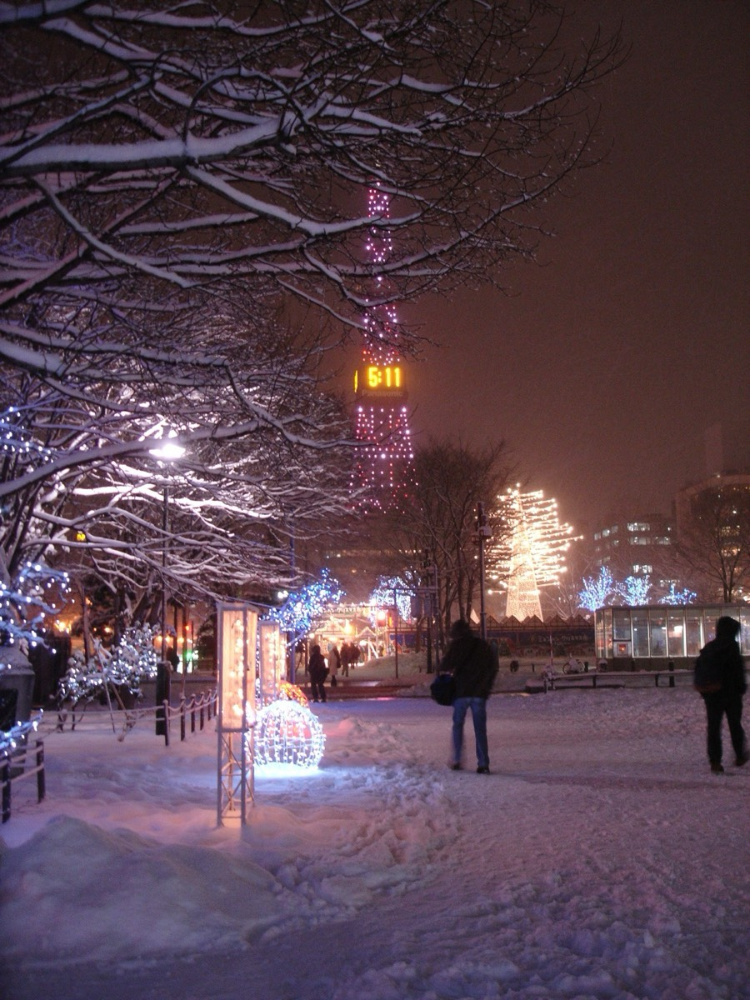
- 특집余市(요이치)에서 空知(소라치)까지, 홋카이도 컬트 와인10
- 新酒(신주)가 나오는 주, 홋카이도 사케 지도17
- 마셔 볼 것 10, 삿포로에서 만날 확률까지22
- 한도를 넘겨 산다: 와인·사케 세금 계산과 자진신고60
- 줄 서는 시각표, 木多郎(기타로) 11:00 · 鍾馗(쇼키) 10:4524
- 밤마다 고르는 바 넷, 보여 주는 일본어 카드33
삿포로 푸드·드링크 가이드북
북쪽의 잔
삿포로 푸드·드링크 가이드북 · 2026.11.23–11.26
비매품 · 개인 여행용
- 시리즈
- 여행 가이드북 04 (01 교토 2026.09, 02 요나고 2026.10, 03 나고야 2026.11)
- 발행
- 2026-11-18 인쇄용 초판
- 기획
- Minsoo Kim
- 제작
- Claude 에이전트 편집팀 (취재·집필·편집·조판·검수)
- 사진
- 「사진과 참고 자료」 참조 (67쪽)
- 서체
- Noto Serif KR · Noto Sans KR · Noto Serif JP · Noto Sans JP (SIL Open Font License 1.1)
- 조사 기준
- 2026-11-08. 영업시간·요금·운행·재고는 바뀔 수 있으니 현지에서 다시 확인한다.
- 웹판
- https://mskim5383.github.io/2026-11-sapporo-guide/
이번 호
CONTENTS · 여행 가이드북 04
EDITOR'S LETTER
북쪽에서 마실 것, 가져올 것
두 사람의 나흘을 위한 한 권. 놓치면 안 되는 시각 여섯, 이 책이 지키는 약속 셋.
이번 호는 미식과 술을 깊게 파는 두 사람의 삿포로 나흘을 위해 만들었다. 와이너리에도 양조장에도 가지 않는다. 대신 余市(요이치)와 空知(소라치)의 와인, 도내 양조장의 새 술이 시내의 바와 주류점과 식탁에 어떻게 닿는지를 따라간다. 그리고 면세 한도를 넘겨 사서, 세금을 내고 가져온다.
나흘에는 놓치면 안 되는 시각이 여섯 있다. 11/23 19:00 すしどんぶり(스시돈부리). 11/24 11:00 木多郎(기타로) 앞 줄과 16:00 魚菜(교사이) 전화. 11/25 10:45 鍾馗(쇼키) 앞 줄과 17:00 鷄灯(게이토). 11/26 10:45 숙소 출발. 나머지는 그날 사정에 맞춰 바꿔도 되고, 바꾸는 규칙은 「결정 규칙」(7쪽)에 모았다.
이 책은 세 가지를 지킨다. 첫째, 사람의 말과 맛을 지어내지 않는다. 맛과 향은 출처가 쓴 표현만 출처와 함께 옮겼고, 점수로 가게를 판정하지 않는다. 둘째, 만나기 어려운 술은 어렵다고 적는다. 컬트 와인은 계약 주류점에 배분되는 술이라 시내에서 못 만날 수 있다. 그 확률을 병마다 막대와 글자로 표시했다. 셋째, 한자와 일본어 옆에는 언제나 한글 소리를 붙였다. 메뉴판과 라벨을 소리 내어 읽을 수 있게.
앞쪽에는 나흘의 요약, 와인과 사케 특집, 마셔 볼 열 병이 있다. 가운데에는 가게와 날마다의 시간표가, 뒤에는 프레스티지 여행법과 술 세금, 교통, 그리고 가게·택시·전화에서 쓰는 일본어 카드가 있다. 영업시간과 가격은 2026년 11월 8일 조사를 기준으로 했고, 리뷰와 보도에서 온 값에는 날짜를 함께 적었다. 현지에서 다르면 현지가 맞다.
OVERVIEW · 11.23–11.26
나흘 한눈에
숙소는 北1西7(기타 1 니시 7) 한 곳. 시내만 다니고, 둘째 날 오후는 술을 산다.
3박由縁 札幌(유엔 삿포로)
7식탁
3밤의 바
4주류점(11/24)
나흘 요약
| 낮 (굵은 글씨는 고정점, 걸음은 추정) | 저녁·바 |
|---|---|
| Day 1 · 11/23(월·공휴일) 도착, 크리스마스 시장과 해산물 · 약 8,000보 · 42쪽 | |
| 14:40 숙소 → 15:00 さえら(사에라) → 15:45 크리스마스 시장 → (선택) 16:45 테레비토 → 17:30 숙소 체크인·온천 | 19:00 すしどんぶり(스시돈부리) → 20:30 교자 → 21:20 nano gould. |
| Day 2 · 11/24(화) 스프카레 노포, 술 사는 날 · 약 11,000보(최다) · 47쪽 | |
| 09:00 赤れんが庁舎(아카렌가 청사) → 11:00 木多郎(기타로) 줄 → 13:30~16:15 주류점 넷 | 16:00 魚菜(교사이) 전화 → 18:00 魚菜(교사이) → 20:45 ばんなちゅ(반나추) |
| Day 3 · 11/25(수) 라멘 첫 회전, 맥주와 아기용품, 야키토리와 칵테일 · 약 8,000보 · 51쪽 | |
| 07:30 조식 → 10:45 鍾馗(쇼키) 줄 → 12:20 アカチャンホンポ(아카찬혼포) → 13:30 맥주 박물관 투어 | 17:00 鷄灯(게이토), 예약 완료 → 19:45 nano.femto. |
| Day 4 · 11/26(목) 아침 온천, 키오스크 먼저, 로열 라운지 · 약 3,000보 · 55쪽 | |
| 06:00 온천 → 07:30 조식 → 10:45 숙소 출발 → 공항에선 면세 키오스크가 위탁보다 먼저 | 13:00 ロイヤルラウンジ(로열 라운지) → 14:15 KE766 |
그날 쉬는 곳
| 날 | 쉬는 곳 (일정에 걸리는 것만) |
|---|---|
| 11/23(월·공휴일) | もろはく(모로하쿠)(출장 행사), nano.femto.(월 휴무), 木多郎(기타로)(연휴 공휴일 휴무, 추정). ばんなちゅ(반나추)는 불확실 |
| 11/24(화) | 근대미술관·조각미술관·시 자료관·맥주 박물관 투어(공휴일 다음 날), 麺 鍾馗 本店(멘 쇼키 본점), 鷄灯(게이토), nano gould. |
| 11/25(수) | さえら(사에라), もろはく(모로하쿠), リベラワインテラス(리베라 와인 테라스) |
| 11/26(목) | 오전만 쓴다. 크리스마스 시장은 11:00 개장이라 시간이 안 맞는다 |
결정 규칙
| 시점 · 볼 것 | 규칙 |
|---|---|
| 11/23 체크인 · 桜本(사쿠라모토) 11/24 영업(프런트 확인) | 휴무면 いとう(이토)·フジヰ(후지이)에서 더 산다. 개점이 늦으면 いとう(이토) → 桜本(사쿠라모토) 순 |
| 11/23 14:40 · 숙소 도착 시각 | 15:30까지면 さえら(사에라), 늦으면 시장 직행 |
| 11/24 11:00 · 木多郎(기타로) 줄 | 앞에 21명(첫 회전)이 넘거나 품절이면 스아게(스아게 4 쪽이 덜 붐빈다) |
| 11/24 16:00 · 魚菜(교사이) 전화 | 만석이면 吉翔(깃쇼) → 夏下冬上(가카토조) → まる田(마루타) |
| 11/24 16:20 · 숙소에 내려놓은 병 수·무게 | 짐 배분표(40쪽)로 박스·캐리어에 드는지 본다. 넘으면 11/25엔 사지 않는다 |
| 11/25 10:45 · 鍾馗(쇼키) 줄 | 15명 넘고 투어가 13:30 이전이면 순서 교환 |
| 11/25 21:45 · 짐 무게(가방당 32kg) | 넘는 가방은 병을 다른 가방으로 |
| 11/25 21:45 · 다음 날 예보 | 눈이면 그날 밤 프런트에 공항 정액 택시 예약(전날~2시간 전 예약제) |
| 11/26 10:15 · JR 운행정보 | 지연이면 일반 택시로 공항까지 |
대안
| 대안 · 언제 | 무엇을 바꾸나 | 잃는 것 |
|---|---|---|
| 스아게 · 11/24 木多郎(기타로) 품절·늦음 | 점심을 スープカリー スアゲ プラス(수프카리 스아게 플러스)(南4西5(미나미 4 니시 5), 현금·PayPay) 또는 スアゲ4(스아게 4)(숙소 도보 9분, 카드 가능)로(27쪽) | 木多郎(기타로) |
| 눈·비 · 당일 | 大通(오도리) ↔ すすきの(스스키노)는 ポールタウン(폴타운), 숙소 ↔ さっぽろ(삿포로)는 チ・カ・ホ(치카호) 지하. 11/24 주류점·11/25 아리오는 전부 택시 | 걷는 재미 |
| 나이트캡 · 11/25 21:30에 여력이 있을 때 | nano.femto. → 北海道産酒BAR かま田(홋카이도산슈 바 가마타)(37쪽) | 짐 싸는 시간 |
11/24·25 바를 맞바꾸는 안은 「바 가이드」(33쪽).
예약·확인
일본어 전화: 魚菜(교사이)(11/24 16:00), nano.femto.(11/25 19:45 예약), 桜本(사쿠라모토) 영업 확인. 셋 다 11/23 체크인 때 프런트에 함께 부탁한다. 프런트 대행(68쪽) 또는 전화 카드(68쪽). 할 일 목록은 「체크리스트」(66쪽).
| 언제까지 · 무엇 (11/8 상태) | 어떻게 · 누가 | 완료 |
|---|---|---|
| 지금 · e-티켓: KE766 시각(14:15/14:00), 좌석 A-B·H-J (미완) | 대한항공 앱·웹 | ☐ |
| 11/20까지 · すしどんぶり すすきの店(스시돈부리 스스키노점) 11/23 19:00 2명 (미완) | Tabelog 넷 예약. 전화 불필요 | ☐ |
| 11/21 전후 · nano gould. 11/23 21:20 2명 (미완) | 예약 페이지(TERIYAKI Booking, 공식 Instagram 프로필 링크, 「바 가이드」 QR). 취소는 무연락·당일 100%. 문의 011-252-7556 | ☐ |
| 11/23 체크인 · 丸市桜本商店(마루이치 사쿠라모토 상점) 11/24 영업 (미완) | 프런트에 확인 부탁(011-521-2078, 카드) | ☐ |
| 확인 끝 · ワインの店いとう(와인노 미세 이토) 11/24 영업(공식 연중무휴) | 전화 불필요 | ☐ |
| 출발 전 · 맥주 박물관 가이드투어 11/25 2명 (미완) | 온라인 예약(시작 2시간 전까지) | ☐ |
| 출발 전 · 와인 운반 준비 (미완) | 쉬퍼 박스(6병용) 1~2개 또는 캐리어, 프로텍터 6~10개 | ☐ |
| 각 전날까지 · 숙소 조식 11/25·26 (미완) | 메일·전화 또는 체크인 때 | ☐ |
| 11/23 17:30 체크인 · 프런트 부탁: 魚菜(교사이) 전화, 냉장고·박스, 11/26 택시 (현지) | 대면. 대행 가능 여부 확인 필요 | ☐ |
| 11/24 16:00 정각 · 魚菜(교사이) 11/24 18:00 2명 (현지) | 전화 011-210-8588. 19시까지 입장, 현금만. 프런트 또는 본인 | ☐ |
| 11/21 전후 · ばんなちゅ(반나추) 11/24 20:45, nano.femto. 11/25 19:45 (미완) | DM bannachu · nano.femto. 은 전화만(011-231-2688), 11/23 프런트 대행으로 | ☐ |
| 예약 완료 · 鷄灯(게이토) 11/25 17:00 | 메일 주소 南1条東2(미나미 1조 히가시 2) 확인, 콜키지 080-3237-1443 | ☐ |
| 11/22 · Visit Japan Web, 현금, 신발 (미완) | 현금 1인 3만 엔(추정) + いとう(이토) 와인 값, 미끄럼 방지 신발 | ☐ |
특집 · HOKKAIDO WINE
야생효모 35년, 북쪽의 피노 누아
1991년의 야생효모 甲州(고슈)에서 68,500엔의 병까지. 작은 도멘을 계보로 읽고 삿포로에서 만날 확률을 적는다.
이번 나흘은 와이너리에 가지 않는다. 대신 余市(요이치)와 空知(소라치)의 와인이 삿포로의 선반과 잔에 어떻게 닿는지 따라간다. 余市町(요이치초)에만 와이너리가 18~19곳(집계 시점에 따라), 그중 13곳이 登(노보리)의 골짜기에 있고, 도내 와인용 포도의 약 5할이 여기서 난다. 1970년대 사과값 폭락 뒤 1980~81년, 사과 농가 7곳이 와인 전용종으로 갈아탄 것이 시작이었다. 병 수는 작다. Takahiko의 플래그십이 연 1.2~1.3만 병, 登醸造(노보리 양조)는 약 3,000병이고, 空知(소라치)의 소규모 생산자 상당수는 연 1만 병 이하다.
18~19곳余市町(요이치초)의 와이너리
약 3배10년 새 도내 와이너리
1.2~1.3만Nana-Tsu-Mori 연 병 수
산지와 삿포로까지의 거리
| 산지 | 성격 | 알아 둘 이름 | 만날 확률(추정) |
|---|---|---|---|
| 余市(요이치)·仁木(니키) | 일본 피노 누아의 중심 | Takahiko, Mon, 登醸造(노보리 양조) | 컬트 낮음, 중견 보통 |
| 空知(소라치) | 10R가 신진을 키운 산지 | 10R, KONDO, Nakazawa | 낮음 |
| 函館(하코다테)·北斗(호쿠토) | 해외 자본과 내추럴 | De Montille, 農楽蔵(노라쿠라) | 낮음 |
| 十勝(도카치)·富良野(후라노) | 자치단체 와이너리 | 十勝ワイン(도카치 와인), ふらのワイン(후라노 와인) | 높음 |
| 삿포로 시내 | 시가지형 와이너리 | さっぽろ藤野ワイナリー(삿포로 후지노 와이너리) | 높음 |
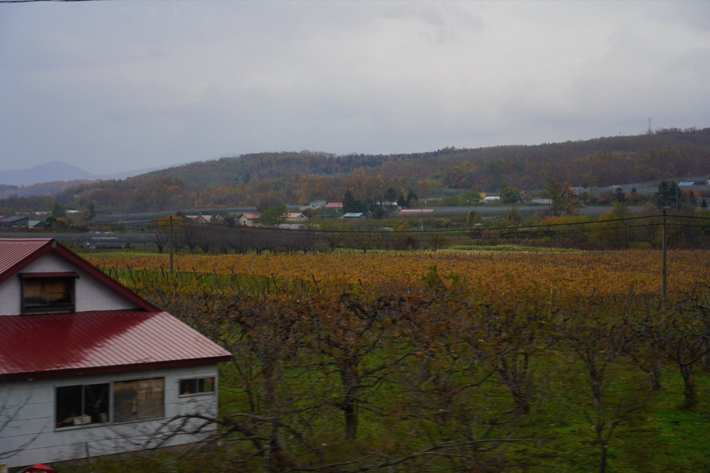
계보: 한 사람의 야생효모에서
출발점은 Bruce Gutlove다. 1989년 栃木(도치기) ココ・ファーム(코코 팜)의 초청으로 일본에 와 1991년 甲州(고슈)를 야생효모만으로 발효했고, 2012년 岩見沢(이와미자와)에 일본 첫 커스텀 크러시(위탁 양조) 와이너리 10R를 세웠다. サライ(사라이)는 그의 영향을 받은 이로 曽我貴彦(소가 다카히코), KONDO, Nakazawa를 꼽았다. 2세대 허브는 Domaine Takahiko다. 余市(요이치)로 오는 이주자 다수가 여기서 2년 연수를 거치고, Domaine Mon, Atsushi Suzuki(鈴木淳之(스즈키 아쓰시)), LOWBROW CRAFT, 山田堂(야마다도), ランセッカ(란세카)가 그렇게 독립했다.
여섯 도멘
Domaine Takahiko
- 양조가
- 曽我貴彦(소가 다카히코). 小布施ワイナリー(오부세 와이너리)와 같은 소가 집안
- 양조
- 대부분 Pinot Noir. 송이째 발효, 아황산·배양효모 무첨가, 수확 2년 뒤 봄 출시(지금 최신 2024, 추정)
- 출하
- 전국 계약(특약) 주류점 배분, 수출 약 2천 병
Nana-Tsu-Mori Pinot Noir가 연 1.2~1.3만 병, 귀부 포도의 Blanc de Noir는 약 2천 병이다. Rose de Noir 2024 「グランキュベ(그랑 퀴베)」는 계약 주류점에 1병씩만 나간다는 보도자료가 있다. 2017년 일본 소매는 3,700엔. 2026년 2차 시장·해외 리테일에서 2024 빈티지는 68,500엔(Bottles Japan)이다.
만날 확률 낮음 · 보이면 그 자리에서
Nakazawa Vineyard
「クリサワブラン(구리사와 블랑)」은 Gewürztraminer가 열쇠인 필드 블렌드 화이트다. nippon.com(2022)은 空知(소라치)에서 입수 곤란한 와인의 필두로 꼽았다.
만날 확률 매우 낮음
KONDO Vineyard
밭은 「タプ・コプ(다푸코푸)」와 「モセウシ(모세우시)」. 자연효모에 크베브리 8기(조지아에서 들여온 2기와 斜里(샤리) 가마에서 만든 6기), 농약을 끊은 뒤 수량은 약 1/5. konkon은 10품종 혼양이다. 2018년 가격 3,564~3,780엔.
만날 확률 낮음
Domaine Mon
Takahiko 2년 수행 뒤 독립. 「ドングリ(돈구리)」는 자사 Pinot Gris, MON 시리즈는 매입 포도다.
만날 확률 낮음~보통 · MON 시리즈 쪽이 쉽다(추정)
登醸造(노보리 양조)
만드는 와인이 로제 「セツナウタ(세쓰나우타)」 하나뿐이라, 그해 병 수가 곧 그 와인의 전부다.
만날 확률 매우 낮음
De Montille & Hokkaido
Volnay의 Etienne de Montille가 시작했고, Pinot Noir·Chardonnay 중심으로 소개된다. 자가 포도 첫 빈티지 2024는 약 7,000병. Pellicle(2026-07)은 2026년 말 출시, 이미 전량 배정이라고 적었고, ワインの店いとう(와인노 미세 이토) 공식 사이트는 9/12 「Bellevue」 '24 입고를 알린 뒤, 「Bellevue」와 한자 이름의 Pinot Noir '24 750ml 완판을 표시했다(11/8). 이 둘이 Pellicle 이 말한 자가 포도 첫 빈티지인지는 확인 필요.
만날 확률 거의 없음
그 밖에 알아 둘 도멘
| 이름 | 산지 | 규모 | 대표 퀴베 |
|---|---|---|---|
| Domaine Yui | 登(노보리) | 2019 · 5ha · 2만 병 | A Rouge |
| モンガク谷(몬가쿠다니) | 登(노보리) | 2018 · 2.2ha · 1.2만 병 | 「栃(도치)」 |
| 山田堂(야마다도) | 登(노보리) | 2021 · 2.3ha · 2만 병 | Müller-Thurgau 등 |
| LOWBROW CRAFT | 登(노보리) | 2022 · 2ha · 1만 병 | 병내 2차 발효 스파클링 |
| Domaine Bless | 仁木(니키) | 옛 이름 Le Rêve | 필드 블렌드 MUSUBI |
| 農楽蔵(노라쿠라) | 北斗(호쿠토) | 3ha | Chardonnay 「Fumizuki」 |
| DUE PUNTI | 北斗(호쿠토) | 2020 · 약 6,000그루 | Fumizuki Pinot Blanc 등 |
삿포로에서 만날 확률
컬트급을 잔으로 확실히 내는 삿포로 가게는 확인하지 못했다. Discover Japan은 余市(요이치)의 주류점을 소개하며 컬트적 인기의 와인은 진열하자마자 팔린다고 적었다(2023-12). 시내 와인숍 두 곳의 공식 판매 목록(11/8)에도 컬트 다섯은 없었다. 매장 재고·입고는 다를 수 있다(38쪽). 이름을 대고 묻는다(74쪽). 잔으로는 BAR FUJII(바 후지이), veraison, かま田(가마타)(37쪽).
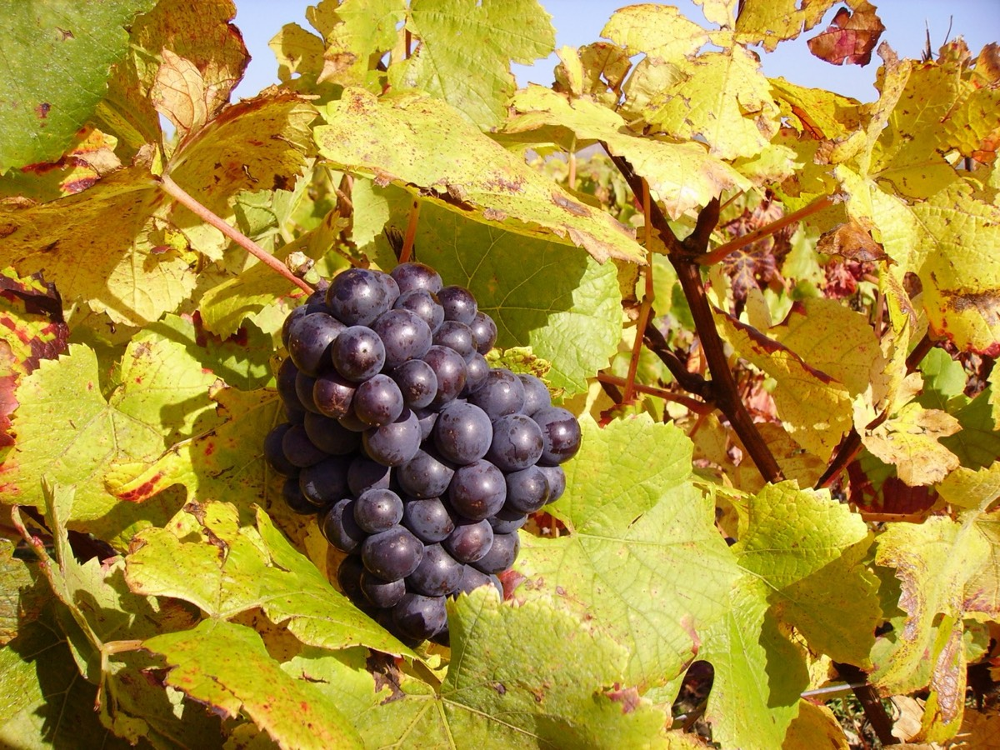
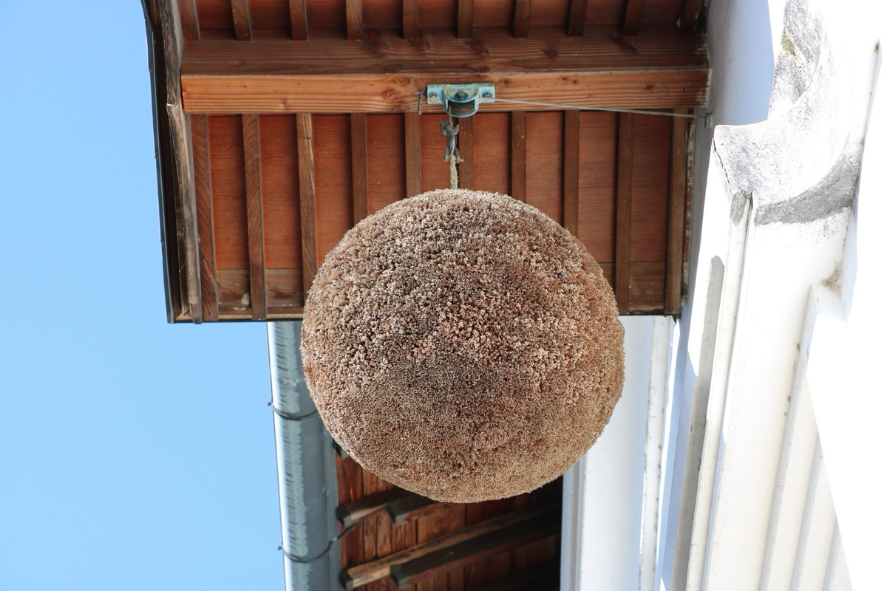
특집 · HOKKAIDO SAKE
신주가 막 나오는 주
ひやおろし(히야오로시)가 끝나고 新酒(신주)가 나오는 11월 말. 주미 셋, 양조장 여덟, 2025년 실적으로 짐작한 2026년.
北海道酒造組合(홋카이도 주조 조합)의 니혼슈 양조장은 17곳이지만, 도내에서 마시는 니혼슈 중 도산주는 약 2할(2022)이다. 삿포로의 니혼슈 바 もろはく(모로하쿠)도 추천은 전국 명주다. 홋카이도 술은 찾아서 마셔야 한다. 날짜는 2025년 같은 시기 北海道新聞(홋카이도 신문) 보도로 짐작했고, 해마다 움직인다.
주미 셋, 그리고 다음
도산 쌀 니혼슈가 퍼진 계기로 꼽히는 것은 2000년 우량품종 吟風(긴푸)다. 2006년 彗星(스이세이)는 단백질이 낮아 담려한 술에 맞고, 2014년 우량품종 きたしずく(기타시즈쿠)는 吟風(긴푸)보다 냉해에 강하다. 다음은 시험 품종 北冴(기타사에). 천립중이 가볍고 단백질이 높다는 점이 과제로 꼽힌다.
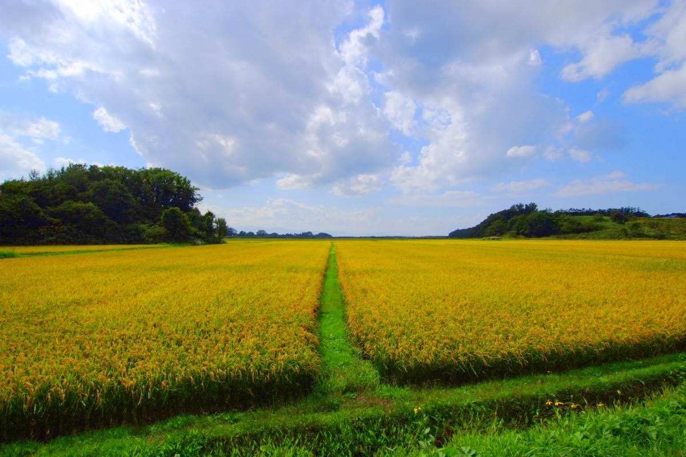
11월 말의 새 술
- 만날 가능성: 国稀(구니마레) 순미대음양(2025년 11/18, 2,000병), 北海鬼ころし(홋카이 오니코로시) 계열, 上川大雪(가미카와 다이세쓰) 신주, 男山(오토코야마) 신주, ひやおろし(히야오로시)의 남은 병.
- 1~2주 늦음: 五稜(고료) 신미신주(12/1), 北の勝(기타노카쓰) 대음양(12/3), 金滴(긴테키)·二世古(니세코)의 겨울 한정(12/10 전후).
- 못 만남: 北の勝 搾りたて(기타노카쓰 시보리타테). 12월이 아니라 1월 20일 전후다.
2026년 날짜로 확인된 것이 하나 있다. 上川大雪(가미카와 다이세쓰)는 11월 21~22일 양조장 축제에서 갓 만든 신주를 처음 내놓는다(공식). 11/24까지 시내에 닿을지는 알 수 없다.
양조장 요점
| 양조장 | 대표 술 | 희소·한정 | 11월 말 | 삿포로 단서 |
|---|---|---|---|---|
| 国稀(구니마레)(増毛(마시케)) | 国稀(구니마레) | 순미대음양 2,000병 | 막 나온 한정(추정) | 지자케점(추정) |
| 上川大雪(가미카와 다이세쓰) | 특별순미 | 「神川(가미카와)」 현지 우선 | 신주 11/21~ | 桜本(사쿠라모토) 특약점 |
| 三千櫻(미치자쿠라)(東川(히가시카와)) | 彗星(스이세이), 愛山(아이야마) | 원료미 전용 재배 | – | もろはく(모로하쿠) 리뷰 |
| 男山(오토코야마)(旭川(아사히카와)) | 드라이·담려 | 매점 한정 | 11/21 杉玉(스기다마) | 어디서나(추정) |
| 高砂酒造(다카사고 주조)(旭川(아사히카와)) | 国士無双(고쿠시무소) | 彗星(스이세이) 구라다시 한정 | – | – |
| 北の勝(기타노카쓰)(根室(네무로)) | 정규 라인 | 搾りたて(시보리타테) 1월 | 정규품(추정) | 정규품 위주(추정) |
| 金滴(긴테키)(新十津川(신토쓰카와)) | 吟風(긴푸) 100% 특별순미 | 120주년 「初醸(하쓰카모)」 | 늦음(12/10) | – |
| 二世古(니세코)(倶知安(굿찬)) | 특별순미 彗星(스이세이) | 터널 숙성주 | 나와 있을 때(추정) | – |
삿포로에 남은 유일한 양조장은 千歳鶴(지토세쓰루)다. 2023년 64년 만에 순미 전용·사계절 양조의 새 양조장을 지었다. 뮤지엄 한정 병은 「술 쇼핑」(39쪽).
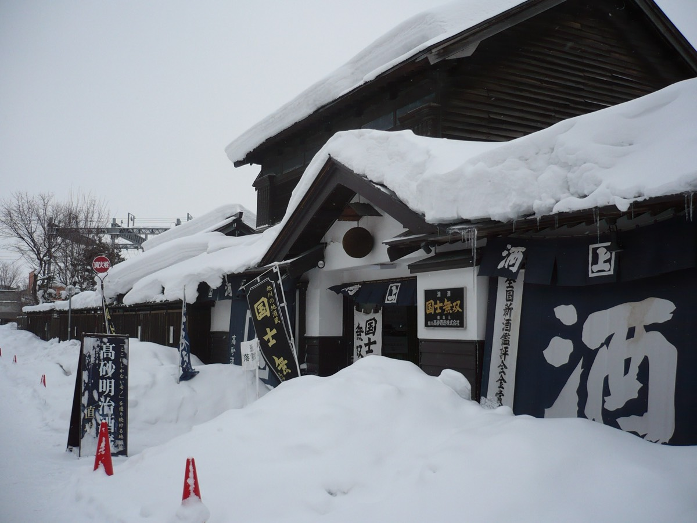
2026년 도산 쌀 니혼슈 어워드 최고상은 上川大雪 特別純米(가미카와 다이세쓰 특별순미)와 五稜 純米大吟醸(고료 순미대음양) 35%. 잔으로 비교할 곳은 「바 가이드」(37쪽).
TEN TO DRINK
삿포로에서 찾을 열 병
순서와 확률 막대는 희소성과 만날 확률을 같이 본 기자 판단(추정)이다.
W1
Nana-Tsu-Mori Pinot Noir
Domaine Takahiko · 余市(요이치)
- 생산
- 연 1.2~1.3만 병, 최신 2024(추정)
- 가격
- 3,700엔(2017) → 68,500엔(2026, 2차 시장)
- 만날 곳
- BAR FUJII(바 후지이)·와인숍에 문의
만날 확률 낮음 · 보이면 바로(13쪽)
W2
「クリサワブラン(구리사와 블랑)」
Nakazawa Vineyard · 岩見沢(이와미자와)
- 품종
- 필드 블렌드, Gewürztraminer가 열쇠
- 생산
- 자사 2.7ha
- 만날 곳
- veraison·BAR FUJII(바 후지이)
만날 확률 매우 낮음
가격 미확인(14쪽)
W3
「タプ・コプ(다푸코푸)」
KONDO Vineyard · 三笠(미카사)
- 양조
- 자연효모. 크베브리로 빚는 오렌지 퀴베도 있다(2022 기사)
- 가격
- 2018년 3,564~3,780엔
- 만날 곳
- veraison, かま田(가마타)
만날 확률 낮음
W4
「ドングリ(돈구리)」
Domaine Mon · 余市(요이치)
- 품종
- Pinot Gris. 매입 포도의 MON 시리즈도
- 생산
- 1.8ha, 연 1만 병
- 만날 곳
- 와인숍. MON 시리즈가 쉽다(추정)
만날 확률 낮음~보통
가격 미확인(15쪽)
W5
「セツナウタ(세쓰나우타)」
登醸造(노보리 양조) · 余市(요이치)
- 생산
- 로제 하나뿐, 약 3,000병
- 만날 곳
- 주류점에 문의
만날 확률 매우 낮음
가격 미확인. 대안은 「특집」의 중견 표(16쪽)
S1
純米吟醸 生酒(순미음양 생주)
千歳鶴(지토세쓰루) 사케 뮤지엄 한정
- 주미
- きたしずく(기타시즈쿠) 100%
- 출하
- 뮤지엄에서만, 그 자리에서 병입
- 만날 곳
- 11/24 15:00(39쪽)
만날 확률 확실 · 생주라 숙소에서
가격 미확인
S2
国稀(구니마레) 순미대음양
国稀酒造(구니마레 주조) · 増毛(마시케)
- 주미
- 兵庫(효고)의 山田錦(야마다니시키). 도산 쌀 술이 아니다
- 정미보합
- 35%
- 출하
- 2025년 11/18, 2,000병 한정
- 만날 곳
- かま田(가마타), 지자케점
만날 확률 보통
가격 미확인(19쪽)
S3
上川大雪(가미카와 다이세쓰) 신주
上川大雪酒造(가미카와 다이세쓰 주조)
- 출하
- 2026년 신주 첫 공개 11/21~22(공식)
- 만날 곳
- 桜本(사쿠라모토) 본점(특약점), かま田(가마타)
만날 확률 보통
특별순미는 2026 어워드 최고상. 가격 미확인
S4
五稜(고료) 순미대음양 35%
函館五稜乃蔵(하코다테 고료노쿠라)
- 정미보합
- 35%
- 만날 곳
- andsake, かま田(가마타)
만날 확률 보통
2026 어워드 최고상. 가격 미확인
S5
三千櫻(미치자쿠라) 「彗星(스이세이)」 등
三千櫻酒造(미치자쿠라 주조) · 東川町(히가시카와초)
- 주미
- 彗星(스이세이), きたしずく(기타시즈쿠), 愛山(아이야마)
- 만날 곳
- もろはく(모로하쿠)(리뷰), かま田(가마타)
만날 확률 보통
가격 미확인. 2020년 옮겨 온 양조장(20쪽)
보이면 바로: De Montille & Hokkaido 2024(いとう(이토)는 9/12 입고 뒤 완판 표시)(15쪽), 「吟風樽生酒(긴푸 다루나마자케)」, 国士無双(고쿠시무소) 彗星(스이세이) 구라다시 한정, 二世古(니세코) 터널 숙성주, まる田(마루타)의 北の錦(기타노니시키)(추정). 이번엔 못 만나는 술은 「11월 말의 새 술」(19쪽).
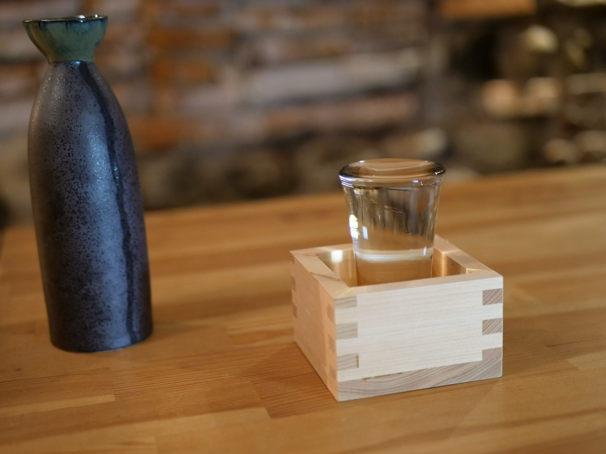
TABLE · LUNCH
낮의 식탁, 줄 서는 시각부터
샌드위치 다방, 스프카레 노포, 라멘 카운터. 셋 다 예약이 안 되고 현금만 받는다. 가격과 줄은 리뷰·공식 게시물의 날짜와 함께 적는다.
さえら 사에라 大通西2(오도리 니시 2)
1975년 창업한 샌드위치 가게(공식 X). Tabelog 3.67, 喫茶店(깃사텐) 百名店(햐쿠메이텐) 2026(11/8 기준). 11/23 15:00.
- 주소
- 大通西2丁目5-1(오도리 니시 2초메 5-1) 빌딩 지하 3층, 大通駅(오도리역) 19번 출구 직결(공식 X)
- 영업
- 10:00~18:00, L.O.(마지막 주문) 17:00. 수요일 휴무
- 결제
- 현금만. 41석, 예약 불가
무엇을
어떻게
- 줄 끝에 선다
금요일 14:30 줄 없음(리뷰). 「줄 맨 끝」 카드(75쪽).
- 두 가지를 하나로
공식 메뉴는 주재료 하나에 짝 하나를 붙인 조합 이름이다. 게살과 새우 커틀릿 조합도 있다.
- 둘이 1세트, 현금
세트 음료 330엔(리뷰).
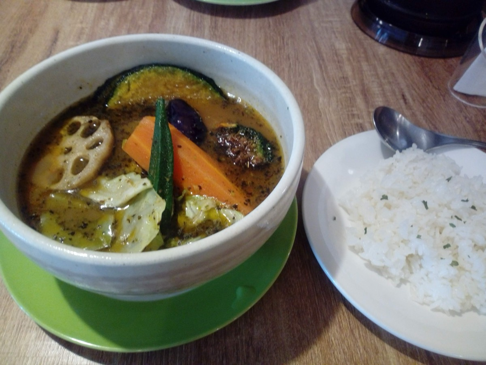
木多郎 澄川本店 기타로 스미카와 본점 澄川6条(스미카와 6조)
1985년 창업, 2004년 지금 자리로. Tabelog 3.81, カレー(카레) EAST 百名店(햐쿠메이텐) 2026(11/8 기준). 11/24 점심.
- 주소
- 南区澄川六条4-2-1(미나미구 스미카와 6조 4-2-1) 1층. 澄川駅(스미카와역) 805m
- 영업
- 11:30~14:00(L.O. 13:30). 「売り切れ次第終了(우리키레 시다이 슈료)」, 품절되면 끝
- 결제
- 현금만. 21석, 예약 불가
리뷰에는 채소를 素揚げ(스아게)해 얹는 토핑을 고안한 가게라는 설명(공식 주장인지 확인 필요), 토마토 베이스의 진한 수프라는 표현이 있다.
무엇을
어떻게
- 11:00에 줄
"평일 11:00경 도착, 오픈 때 거의 만석"·"평일 12시 반 품절" 리뷰(2026/10). 앞에 21명(첫 회전 좌석)이 넘으면 스아게로.
- 물이 오면 말로 주문
메뉴와 매운맛 번호. 「스프카레 주문」 카드(71쪽).
- 매운맛은 번호
리뷰에선 0~2. "0이어도 가정용 중간 매운맛 정도"(2026/09). 최고 단계 확인 필요.
- 30~35분 기다린다
착석 뒤 나오기까지(리뷰).
麺 鍾馗 本店 멘 쇼키 본점 北26東1(기타 26 히가시 1)
Tabelog 3.67, ラーメン(라멘) HOKKAIDO 百名店(햐쿠메이텐) 2024·2025(11/8 기준). 11/25 점심.
- 주소
- 東区北二十六条東1-2-25(히가시구 기타 26조 히가시 1-2-25) 1층. 北24条駅(기타니주욘조역) 도보 약 5분
- 영업
- 11:00~15:30 · 17:00~20:00. 공식 X 11월 캘린더로 11/24 휴무, 11/25 영업
- 결제
- 현금만, 입구 食券機(식권기). 10석
무엇을
어떻게
- 10:45 바깥 줄
겨울 바깥 줄은 춥다(2025/12 리뷰). 공식 X 아침 글에 그날 한정이 올라온다(11/7·8).
- 식권기 먼저
현금으로 식권을 사서 건넨다. 물은 셀프(리뷰).
| 리뷰 | 도착 | 줄 · 기다림 |
|---|---|---|
| 2026/05·06 | 개점 15분 전 | 9명~십수 명 |
| 2026/09 | 11:10 | 약 10명 · 약 30분 |
| 2026/04 | 12:30 넘어 | 7명 · 28분 |
| 2026/11 | 14:00경 | 없음 |
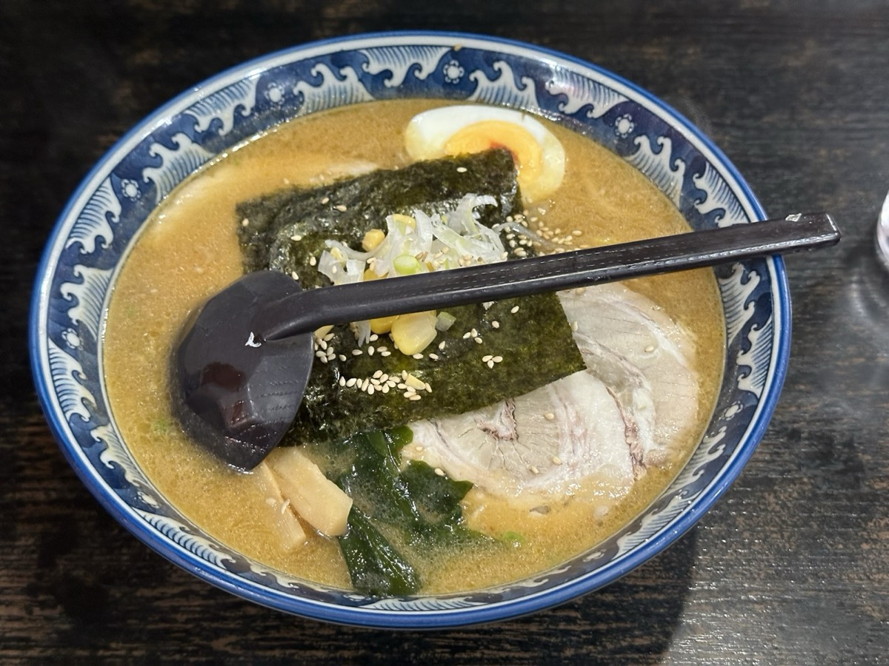
スープカリー スアゲ プラス 수프카리 스아게 플러스 南4西5(미나미 4 니시 5)
11/24 木多郎(기타로)의 대안. Tabelog 3.69, カレー(카레) EAST 百名店(햐쿠메이텐) 2026(11/8 기준).
- 영업
- 평일 11:30~21:00, 무휴, 예약 불가(공식). 개점 때 40~50명 줄(2026/10 리뷰)
- 결제
- 현금·PayPay 만(공식)
- 가까운 곳
- スアゲ4(스아게 4). チ・カ・ホ(치카호) 1번 출구 직결, 숙소 도보 약 9분, 발권기 순번, 카드 가능
주문(공식 메뉴·리뷰): 테이블 QR 로 카레 → 수프(イカ墨(이카스미)·エビ(에비) +200엔) → 매운맛 1~6(가게 권장 3, 공식은 2번이 시판 카레의 중간 매운맛 정도라고 적었다) → 밥(180g까지 무료) → 토핑.
TABLE · DINNER
밤의 식탁, 예약하는 법부터
넷 예약 하나, 예약 없는 교자, 당일 16시 전화 한 통, 미리 잡아 둔 야키토리 코스. 저녁마다 문을 여는 방법이 다르다.
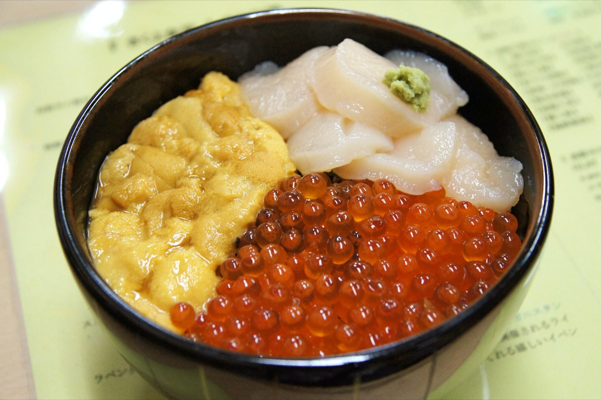
札幌海鮮丼専門店 すしどんぶり すすきの店 삿포로 가이센동 전문점 스시돈부리 스스키노점 南6西4(미나미 6 니시 4)
2026-03-05 개점, 狸小路(다누키코지) 가게에 이은 2호점. Tabelog 3.63(11/8 기준). 11/23 19:00.
- 주소
- G4 빌딩 1층. すすきの駅(스스키노역) 도보 약 3분
- 영업
- 매일 11:00~22:30, L.O.(마지막 주문) 22:00
- 예약
- Tabelog 넷 예약(11/8 화면: 11/23 2명 전 시간 빈자리). 취소 규정 확인 필요
- 결제
- 카드·교통계 IC. 18석. 한국어 메뉴·한국어 가능 직원
무엇을
어떻게
- 11/20까지 넷 예약
큰 짐은 숙소에 두고 와 달라는 가게 공지.
- 입구에서 이름
「예약한 가게」 카드(71쪽). 게·연어알 쪽을 먼저 본다(추정).
SAPPORO餃子製造所 狸小路店 삿포로 교자 세이조쇼 다누키코지점 南2西5(미나미 2 니시 5)
공식 Instagram 소개는 "전부 자가제, 큰 육즙 교자". Tabelog 3.49(11/8 기준). 11/23 20:30.
- 주소
- 狸小路(다누키코지) 5丁目(초메) 1·2층. すすきの駅(스스키노역) 도보 5분
- 영업
- 11:00~23:00, 부정기 휴무. 예약 불가
- 결제
- 카드·교통계 IC·PayPay 등. 43석. 한국어 메뉴
- 문의
- ☎011-252-0008(공식 Instagram)
무엇을
- 자리의 QR로 주문
저녁엔 붐비고 2층까지 쓴다(리뷰). 스시 뒤라 大粒餃子(오쓰부 교자)에 たれザンギ(다레 잔기), 맥주 정도(추정).
- 21:15에 나선다
nano gould. 까지 약 0.2km.
魚菜 교사이 南3西5(미나미 3 니시 5)
1996년 개업. Tabelog 3.69, 居酒屋(이자카야) EAST 百名店(햐쿠메이텐) 2026, 2021년부터 다섯 번째(11/8 기준). 11/24 18:00.
- 주소
- 빌딩 4층. 狸小路駅(다누키코지역) 189m
- 영업
- 화~토 17:30~21:30(L.O. 21:00). 일·월 휴무
- 결제
- 현금만. 차지 770엔(세금 포함). 예산 6,000~7,999엔
- 자리
- 20석(카운터 8, 座敷(자시키) 12). 외국어 메뉴 확인 필요
무엇을
어떻게
- 16:00 정각에 전화
18:00, 안 되면 18:30. 리뷰엔 16시 반 넘어 18:15를 잡은 사례(2026/09)와 예약 손님 외 거절(2026/10).
- 이름 대고 입장
「예약한 가게」 카드(71쪽). お通し(오토시)가 나온다.
- 인기 셋부터, 현금 계산
차지 770엔이 붙는다.
鷄灯 게이토 南1東2(미나미 1 히가시 2)
공식 Instagram(yakitori.keito) 소개는 "토종닭 야키토리와 와인·니혼슈의 가게". Tabelog 3.61(11/8 기준). 11/25 17:00 예약 완료.
- 주소
- 南一条東2-13(미나미 1조 히가시 2-13) 1층. 北1条西3(기타 1조 니시 3)에서 옮겼다. 예약 메일의 주소를 본다
- 영업
- 수~일 17:00~23:00, 월·화 휴무
- 결제
- 카드. 차지 없음. 19석, 영어 메뉴
- 문의
- ☎080-3237-1443(공식 Instagram 소개란, 예약은 전화나 Tabelog)
| 코스(Tabelog, 10/29 갱신) | 품수 | 가격 | 시간 |
|---|---|---|---|
| 食事付きフルコース(쇼쿠지쓰키 후루 코스) | 15품 | 7,700엔 | 2시간 15분 |
| おまかせコース(오마카세 코스) | 14품 | 7,000엔 | 2시간 15분 |
| ショートコース(쇼토 코스) | 10품 | 4,800엔 | 1시간 45분 |
무엇을
어떻게
- 16:40 출발
도보 약 16분(추정). 연락 없이 15분 늦으면 취소될 수 있다. 향수는 뺀다(과하면 입장 거절). 안에서는 통화 자제.
- 와인 1병, 콜키지를 묻는다
전날 사 둔 홋카이도 와인(「술 쇼핑」(40쪽)). 「와인 지참」 카드(72쪽), 미리라면 위 번호. 17:00 시작이면 코스는 19:15 전후 끝(추정).
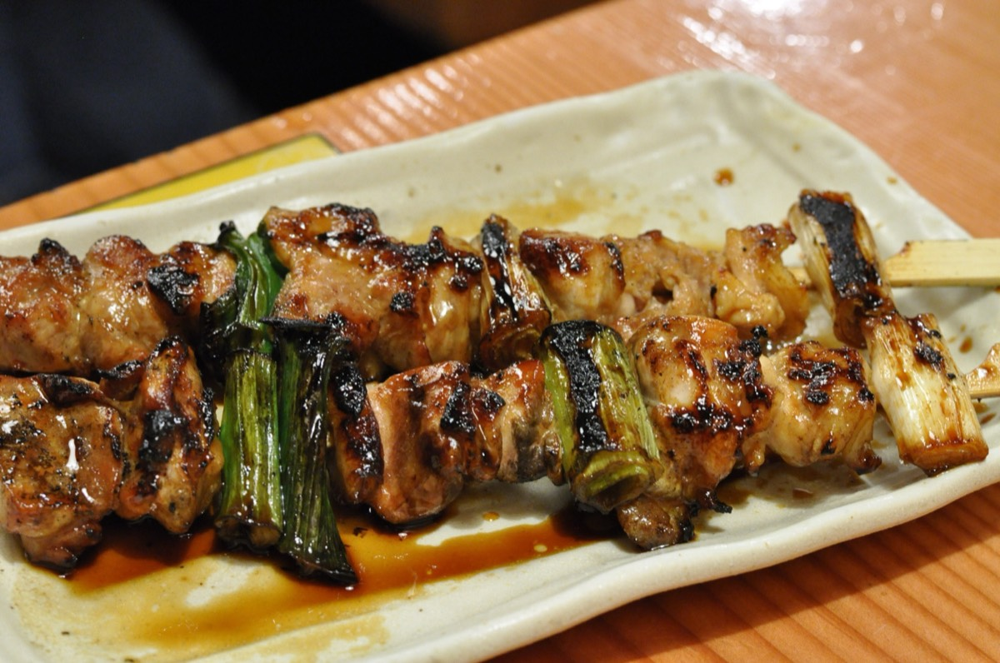
BARS
밤마다 고르는 바 넷
니혼슈 바, 내추럴 와인바, 칵테일 바 둘. 모두 숙소에서 걸어서 13~16분(추정). 쉬는 요일이 달라 사흘 밤이 맞물린다.
밤마다 고르는 표
| 바 | 11/23 월·공휴일 | 11/24 화 | 11/25 수 |
|---|---|---|---|
| もろはく(모로하쿠) | X 출장 행사, 일반 영업 없음 | O 저녁 전 0차로 쓸 수 있다(16:00~) | X 정기휴무 |
| ばんなちゅ(반나추) | ? 불확실 | O 20:45 | O |
| the bar nano.femto. | X 월 휴무 | O | O 19:45 |
| the bar nano gould. | O 21:20 | X 화 휴무 | O |
바꿔도 되는 순서. 화요일에 칵테일이 당기면 11/24 魚菜(교사이) → nano.femto.(약 320m), 11/25 鷄灯(게이토) → ばんなちゅ(반나추)(약 1.4km, 추정)로 맞바꾼다.
참고 바
| 곳 | 성격 | 23·24·25 | 메모 |
|---|---|---|---|
| 立ち飲み BAR FUJII(다치노미 바 후지이) | 와인숍 안 서서 마시는 바, 도산 와인 잔술 | O·O·O | 11:00~20:00(L.O. 19:30, 공식) |
| 北海道産酒BAR かま田(홋카이도산슈 바 가마타) | 도산 술만 약 300종, 니혼슈 880엔~ | O·O·O | 17:00~(2024년 기사 기준). 11/25 나이트캡 대안 |
| 北海道地酒専門店 andsake(홋카이도 지자케 전문점 andsake) | 홋카이도 쌀 니혼슈만, 약 70종 | ?·?·? | 휴무 확인 필요 |
| winecafé veraison | 도산 와인 중심 와인바 | X·O·O | 17:00~L.O. 22:00 |
| ニッカバー(닛카 바) | 위스키 | 부정기 | 18:00~01:00, 차지 1,100엔 |
| 直営 千歳鶴(직영 지토세쓰루) | 한정 「吟風樽生酒(긴푸 다루나마자케)」 | X?·O·O | 11/23은 쉴 수 있다 |
魚菜(교사이) 대안 이자카야 吉翔(깃쇼)·まる田 七番蔵(마루타 나나반구라)는 「밤의 식탁」(32쪽).
밤길
눈이 쌓였다 녹는 때라(평년 최심적설 3~4cm) 밤에 언 보도가 가장 미끄럽다(추정). 술자리 뒤엔 택시도 무리가 없다(22:00~05:00 20% 할증). 눈이 오면 大通(오도리)와 すすきの(스스키노) 사이는 ポールタウン(폴타운) 지하로(추정).
BOTTLE SHOPS
네 가게에서 사서, 싸서, 부친다
11/24 13:30 桜本(사쿠라모토) → 14:05 いとう(이토) → 15:00 千歳鶴(지토세쓰루) → 15:45 フジヰ(후지이) → 16:20 숙소. 동선 지도는 「Day 2」(47쪽).
丸市桜本商店 마루이치 사쿠라모토 상점 南10西7(미나미 10 니시 7)
전국 명주의 한정품·생주 기록이 많은 지자케 주류점(Sakenowa). 上川大雪(가미카와 다이세쓰)·十勝(도카치) 특약점(공식 목록). 그 밖의 홋카이도 술 비중은 모른다.
- 주소
- 札幌市中央区南十条西7丁目4-3(삿포로시 주오구 미나미 10조 니시 7초메 4-3)
- 영업
- 확인 필요. 11/23 프런트에 확인 부탁(011-521-2078)(69쪽)
- 물어볼 것
- 화입 여부(74쪽). 재고는 가게에 묻는다(특약점 목록의 안내)
ワインの店いとう 와인노 미세 이토 南8西8(미나미 8 니시 8)
공식 소개는 부르고뉴에 강한 셀러형 전문점. 홋카이도 중견·신진의 입고 기록도 이어진다.
- 주소
- 札幌市中央区南8条西8丁目1032(삿포로시 주오구 미나미 8조 니시 8초메 1032)
- 영업
- 월~토 10:00~19:00, 일 12:00~18:00, 연중무휴. 011-521-1849
- 규칙
- 일본 와인은 현금만(일부 예외). 귀한 병은 전화 문의 사절, 1인 1병 같은 조건도 있다
- 홋카이도
- Bless·Yui·LOWBROW CRAFT 등. 컬트 다섯은 공식 목록(11/8)에는 없다. 매장 재고는 다를 수 있다
- 입고
- De Montille & Hokkaido 「Bellevue」 '24 등: 9/12 입고 공지, 750ml 완판 표시(11/8)
- 물어볼 것
- 컬트 와인(74쪽), 포장(74쪽)
千歳鶴 酒ミュージアム 지토세쓰루 사케 뮤지엄 南3東5(미나미 3 히가시 5)
삿포로 유일의 양조장 직영. 여기서만 파는 생주가 있다(22쪽).
- 주소
- 札幌市中央区南3条東5丁目(삿포로시 주오구 미나미 3조 히가시 5초메). バスセンター前駅(바스센타마에역) 9번 출구 5분
- 영업
- 10:00~18:00, 연말연시만 휴무, 입장 무료. 011-221-7570
- 시음
- 계절 2~3종 + 仕込み水(시코미미즈). 유료·무료 확인 필요
- 물어볼 것
- 화입 여부(74쪽), 나눠 계산(74쪽)
ワインショップフジヰ 와인숍 후지이 南3西3(미나미 3 니시 3)
1971년 창업, 일본 와인이 특히 많다(공식). 안쪽 BAR FUJII(바 후지이)에서 도산 와인을 잔으로.
- 주소
- 札幌市中央区南3条西3丁目1-2(삿포로시 주오구 미나미 3조 니시 3초메 1-2)
- 영업
- 11:00~20:00, 둘째·셋째 일요일 휴무. 바 마지막 주문 19:30. 011-231-1684
- 홋카이도
- 공식 목록 750ml 83종 중 53종이 3,000~5,999엔, 최고 8,800엔. 컬트 다섯은 공식 목록(11/8)에는 없다. 매장 재고는 다를 수 있다
- 물어볼 것
- 컬트 와인(74쪽), 잔 와인(71쪽)
무엇을 먼저
| 순위 | 무엇 | 어디서 | 예산(가정) |
|---|---|---|---|
| 1 | 컬트 W1~W5(22쪽) | いとう(이토)·フジヰ(후지이) | 1~3만 엔 |
| 2 | 홋카이도 중견 | フジヰ(후지이)·いとう(이토) | 4,000~8,000엔 |
| 3 | 鷄灯(게이토)에서 마실 1병 | 같은 곳 | 4,000~6,000엔 |
| 4 | 부르고뉴 | いとう(이토) | 1~2만 엔 |
| 5 | 蔵元限定(구라모토 한정) 순미대음양 3,960엔·순미음양 3,080엔(세금 포함, 화입 확인) | 千歳鶴(지토세쓰루) | 3,000~4,000엔 |
| 6 | 화입한 계절 한정 | 桜本(사쿠라모토) | 2,000~4,000엔 |
| 7 | 国稀(구니마레), 上川大雪(가미카와 다이세쓰) 신주 | 보이는 곳. 上川大雪(가미카와 다이세쓰)는 桜本(사쿠라모토) | 확인 필요 |
| 현지 | 생주·활성 니고리 | 숙소에서 마심 | – |
컬트는 「あれば(아레바)(있으면)」로 묻는다. 한도를 넘기면 대략 병값의 64%가 세금이라(자진신고, 추정) 비싼 병일수록 면세 4병 안에 넣는다. 「술과 세금」(60쪽), 鷄灯(게이토) 콜키지는 확인 필요.
가져오는 법
프레스티지 위탁은 1인 2개, 각 32kg 이하(부부 4개)이고, 사람끼리·가방끼리 무게를 합칠 수 없다. 와인·사케(24% 이하)는 위험물 수량 제한 대상이 아니다.
| 방법 | 어떻게 | 확인할 것 |
|---|---|---|
| ① 쉬퍼 박스 | 스티로폼 6·12병용을 한국에서 가져가 위탁 | 현지 구입처 확인 필요(74쪽) |
| ② 가게 포장 | いとう(이토)·フジヰ(후지이)에 부탁 | 유무·비용 확인 필요(74쪽) |
| ③ 캐리어 | 프로텍터 + 옷, 지퍼백 | 병끼리 닿지 않게 |
| ④ 숙소 택배 | 선불, 대표자 이름 + 체크인 날짜 | 일반 택배도 같은지 확인 필요 |
⑤ 국제 배송은 쓰지 않는다. 생주는 숙소에서(얼음은 6F·10F 제빙기). 영수증은 가게별·사람별로, 마실 병은 따로 계산(74쪽). 술은 면세로 사지 않는 것이 기본. 짐은 11/25 21:45에 나눈다(51쪽).
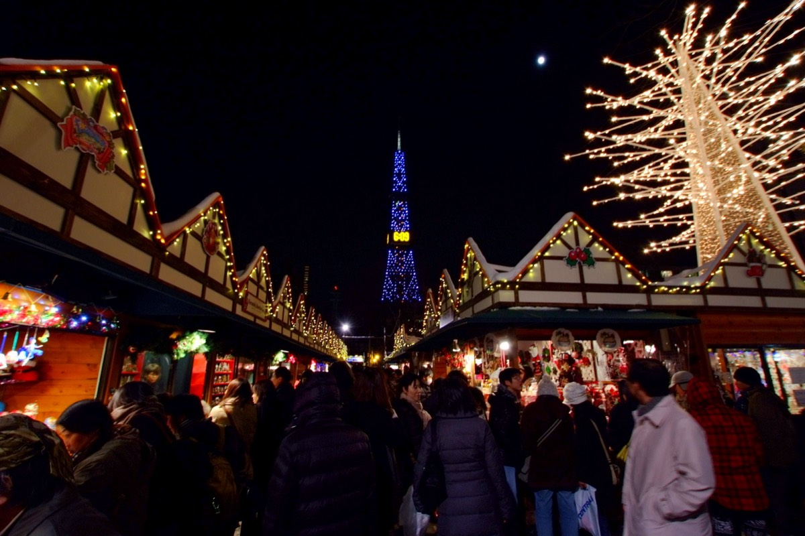
DAY 1 · 11.23 MON · HOLIDAY
도착, 크리스마스 시장과 가이센동
14:40 숙소에 짐을 두고 바로 나선다. 샌드위치와 글뤼바인, 숙소 온천을 지나 19:00 해산물 덮밥.
시간표
- 07:20~
10:05 인천 T2 → KE76508:00~09:15 프레스티지 라운지 서편, 칵테일 위주로 가볍게(추정) · 「프레스티지」(58쪽)시킬 것: 기내 브런치 트레이 1회 - 12:50新千歳(신치토세) 국제선 도착최근 실적 12:24~12:31. 입국·세관은 13:30까지(추정)
- 13:45快速エアポート(쾌속 에어포트) → 札幌(삿포로)37분 · 타는 법은 아래
- 14:40由縁 札幌(유엔 삿포로)에 짐 맡기기체크인 15:00 전에도 보관 · 프런트 부탁은 아래
- 15:00~
15:40 さえら(사에라) 늦은 점심14:50 출발, 도보 약 12분(大通駅(오도리역) 지하로, 추정) · 현금만 · 마지막 주문 17:00시킬 것: 샌드 2종 조합 1세트를 둘이, 세트 음료 330엔 · 「낮의 식탁」(24쪽) - 15:45~
16:45 ミュンヘン・クリスマス市(뮌헨 크리스마스 이치)大通公園(오도리 공원) 1·2丁目(초메), さえら(사에라) 바로 위(추정). 16:30 일루미네이션 점등시킬 것: 글뤼바인 1잔씩 · 아래 카드(45쪽) - 16:45~
17:15 (선택) さっぽろテレビ塔(삿포로 테레비토) 전망대시장 바로 옆 · 1,200엔 · 건너뛰면 시장에서 바로 숙소 - 17:30~
18:30 숙소 체크인·온천도보 약 8~12분(추정) · 온천은 15:00부터 · 프런트 부탁도 이때 - 19:00~
20:15 すしどんぶり すすきの店(스시돈부리 스스키노점)18:35 출발, 大通(오도리) → すすきの(스스키노) 1정거장 + 도보 3분 / 도보 약 20분(추정) · 넷 예약 · 카드 가능, 한국어 메뉴시킬 것: 雲丹・蟹・いくら丼(우니·가니·이쿠라 동) 4,290엔 등 · 「밤의 식탁」(28쪽) - 20:30~
21:15 SAPPORO餃子製造所 狸小路店(삿포로 교자 세이조쇼 다누키코지점)20:20 출발, 도보 약 0.7km·9분(추정) · 예약 불가 · 23:00까지시킬 것: 大粒餃子(오쓰부 교자) 990엔 + たれザンギ(다레 잔기) 790엔 · 「밤의 식탁」(29쪽) - 21:20~
22:45 the bar nano gould.도보 약 0.2km(추정) · 18:00~24:00(마지막 주문 23:30) · 11월 공식 캘린더상 영업 · 예약은 예약 페이지(「바 가이드」 QR)시킬 것: 칵테일 · 「바 가이드」(36쪽) - 23:00숙소, 온천도보 약 15분 / 택시(22시 이후 20% 할증) · 대욕장 마지막 입장 24:45
공항에서 숙소까지
- 입국심사·수하물·세관
Visit Japan Web QR 을 미리 띄운다. 13:30 전후까지(추정).
- 국내선 지하 JR 역으로
연결시설을 걸어 약 10분(추정). 공항역은 국내선 터미널 지하.
- 快速エアポート(쾌속 에어포트) 지정석
운임 1,230엔 + 4호차 uシート(유 시트) 800엔(えきねっと(에키넷토) 티켓리스) / 1,000엔(종이). 37분. 공휴일 오후라 자유석은 붐빌 수 있다(추정).
- JR札幌駅(JR 삿포로역)에서 숙소로
택시 약 1km·5분, 1,000엔 안팎(추정). 걸으면 13~15분.
- 프런트 부탁(14:40 또는 17:30)
11/25·26 조식(70쪽), 전화 대행 셋(다음 날 16:00 魚菜(교사이), 桜本(사쿠라모토) 영업, 11/25 nano.femto.)(68쪽), 냉장고·박스(70쪽). 대행 여부는 확인 필요.
오늘의 장소
ミュンヘン・クリスマス市 뮌헨 크리스마스 이치 · 화이트 일루미네이션 大通西1·2(오도리 니시 1·2)
- 시장
- 11/20(금)~12/25(금), 11:00~21:00(마지막 주문 20:45). 1丁目(초메) リヒターボーゲン広場(리히터보겐 광장): 독일 목조 오두막, 글뤼바인 전문점 グリューザウバー(그뤼자우버). 2丁目(초메) トゥインクルマーケット(트윙클 마켓): 소시지·프레첼·サッポロビール園(삿포로 비루엔). 전 회장 캐시리스, 머그 보증금 확인 필요
- 점등
- 大通(오도리) 11/20~12/25, 16:30~22:00
- 전망대
- さっぽろテレビ塔(삿포로 테레비토) 9:00~22:00(마지막 입장 21:50), 1,200엔, 휴업은 11/11만. 시장 옆
일몰 16:05, 16시면 어둡다. 15:45에 들어가 16:30 점등을 보고, 전망대는 16:45부터 30분(선택).
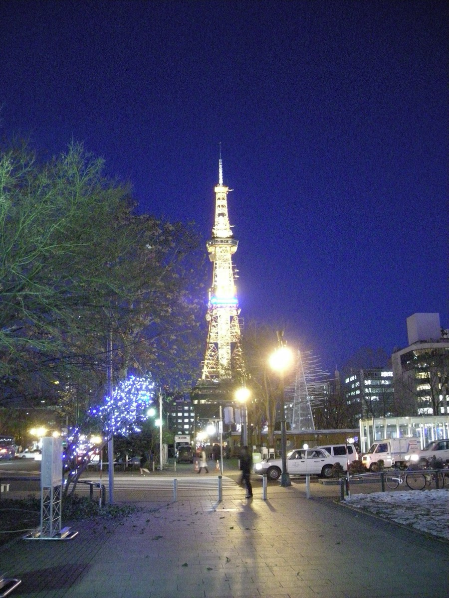
由縁 札幌 유엔 삿포로 北1西7(기타 1 니시 7)
- 주소
- 〒060-0001 札幌市中央区北1条西7丁目6(삿포로시 주오구 기타 1조 니시 7초메 6) · 011-271-1126
- 역
- 大通駅(오도리역) 1번 출구 약 8분 · JR札幌駅(JR 삿포로역) 약 13분
- 체크
- 체크인 15:00 · 체크아웃 11:00 · 프런트 24시간. 체크인 전 짐 보관 가능, 체크아웃 뒤엔 당일 찾을 때만(공간·개수 제한)
- 온천
- 15:00~25:00(마지막 입장 24:45) · 06:00~10:00(마지막 입장 9:45), 숙박객 전용. 노천탕 물은 登別(노보리베쓰) カルルス温泉(가루루스 온천)에서 운반(무색투명·단순온천), 실내탕은 온천수가 아니다. 사우나 남녀 모두, 대욕장과 같은 시간(1시간 전 종료 표기도)
- 방
- 생수·차·과자·유카타. 6F·10F 자판기·제빙기. 전관 금연. 객실 냉장고 확인 필요
숙소 식당 夏下冬上(가카토조)의 조식·석식은 「밤의 식탁」(32쪽).
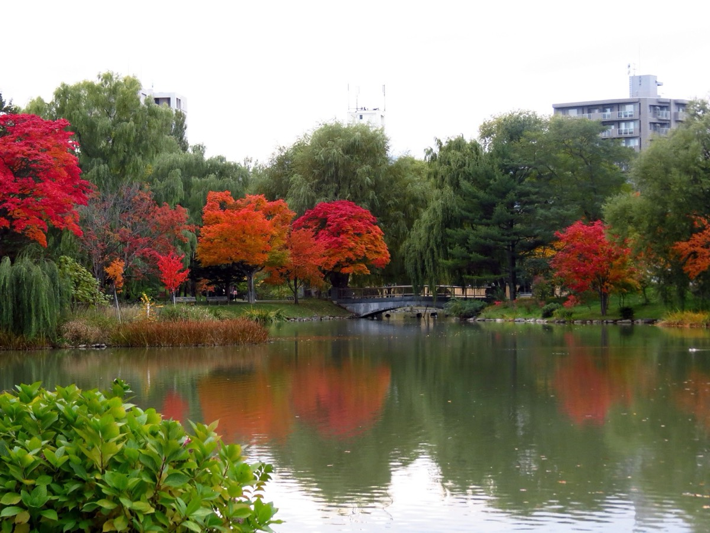
DAY 2 · 11.24 TUE
스프카레, 그리고 술 사는 날
11:00 남쪽 끝 澄川(스미카와)의 스프카레 줄에서 시작해 오후엔 주류점 넷. 16:00 전화 한 통이 저녁을 정한다.
월 공휴일 다음 날이라 미술관·맥주 박물관 투어는 쉬고 주류점은 여는 날. 걸음은 나흘 중 최다(약 11,000보, 추정).
시간표
- 06:00~
08:00 아침 온천조식은 생략하거나 가볍게. 11:30 스프카레 - 09:00~
10:00 赤れんが庁舎(아카렌가 청사)도보 5분(추정) · 8:45부터 · 300엔 · 아래 카드(49쪽)시킬 것: 커피 - 10:20南北線(난보쿠선) さっぽろ(삿포로) → 澄川(스미카와)10:05 출발, 역까지 도보 약 8분 · 약 16분 · 250엔(추정) · 澄川駅(스미카와역)에서 도보 11~14분(805m)
- 11:00木多郎(기타로) 앞 줄첫 회전 21석. "평일 11:00경 도착, 오픈 때 거의 만석"이라는 리뷰(2026/10). 앞에 21명 넘게 서 있으면 기다리지 않고 스아게
- 11:30~
12:45 木多郎 澄川本店(기타로 스미카와 본점)현금만 · 착석 후 30~35분 · 품절되면 끝시킬 것: かきやさい(가키야사이, 굴+채소) 1,450엔 또는 チキンやさい(치킨야사이), 매운맛 0~2 · 「낮의 식탁」(25쪽) - 13:10~
13:25 中島公園(나카지마 공원) 산책12:45 출발: 澄川駅(스미카와역)까지 도보 12분 + 南北線(난보쿠선) 中島公園駅(나카지마코엔역)까지 약 10분, 250엔(추정) - 13:30~
14:00 丸市桜本商店(마루이치 사쿠라모토 상점)공원에서 약 0.5km(추정) · 영업 확인 필요 · 上川大雪(가미카와 다이세쓰) 특약점(공식 목록) - 14:05~
14:45 ワインの店いとう(와인노 미세 이토)도보 5~7분(추정) · 연중무휴(공식) · 일본 와인은 현금만 · 포장 부탁 - 15:00~
15:35 千歳鶴 酒ミュージアム(지토세쓰루 사케 뮤지엄)14:50 택시 약 2km·10분, 1,000~1,500엔(추정) · 10:00~18:00시킬 것: 시음 2~3종. 한정 생주는 숙소에서 마실 몫 - 15:45~
16:15 ワインショップフジヰ(와인숍 후지이) + 立ち飲み BAR FUJII(다치노미 바 후지이)15:40 택시 약 1.1km·5분(추정) · 11:00~20:00시킬 것: 홋카이도 와인 1잔 - 16:00魚菜(교사이)에 당일 예약 전화프런트 대행 또는 직접. 18:00 2명, 안 되면 18:30. 아래 상자
- 16:20택시로 숙소, 병 전부 내려놓기약 1.5km·7분(추정). 생주는 제빙기(6F·10F) 얼음으로
- 16:35~
17:30 온천 - 18:00~
20:30 魚菜(교사이)17:40 출발, 도보 약 13분(추정) · 현금만 · 차지 770엔시킬 것: 刺身盛り合せ(사시미 모리아와세), 酒菜の盛合せ(사카나노 모리아와세), 利酒セット(기키자케 세트) · 「밤의 식탁」(30쪽) - 20:45~
22:30 ばんなちゅ(반나추)약 170m · 18:00~24:00시킬 것: 내추럴 와인 · 「바 가이드」(35쪽) - 22:45숙소도보 15분 / 택시 · 온천 마지막 입장 24:45
주류점 넷에서 무엇을 사고 어떻게 싸는지는 「술 쇼핑」(38쪽).
오늘의 장소
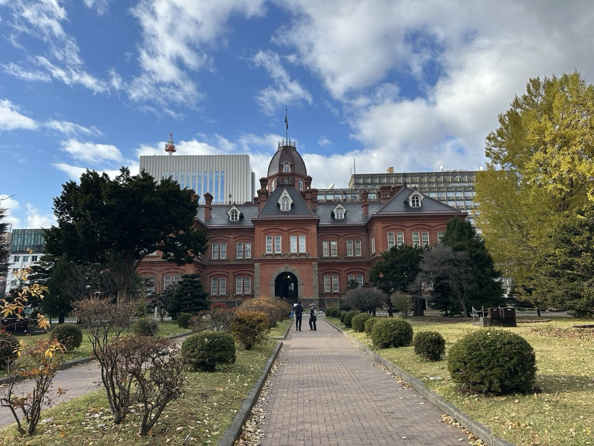
北海道庁旧本庁舎 홋카이도청 구 본청사, 통칭 아카렌가 청사
- 관람
- 8:45~21:00(마지막 입장 20:30), 300엔. 八角塔(팔각탑) 관람 1,200엔. 휴관 11/15, 12/29~1/3
- 1층
- 레스토랑 HOUSE.H(8:45~21:00, 마지막 주문 20:30), 도산 와인 글라스(예: 1,300엔). 「白い恋人(시로이 고이비토) Akarenga sweets labo」 9:00~19:00
2025-07-25 리뉴얼 재개관. Domaine Takahiko 페어링이 든 「赤れんがワインガーデン2026(아카렌가 와인 가든 2026)」은 11/21~22에 끝나, 이틀 차이로 놓친다.
DAY 3 · 11.25 WED
라멘 첫 회전에서 칵테일까지
10:45 北24条(기타니주욘조)의 라멘 줄, 오후엔 맥주와 아기용품. 17:00 鷄灯(게이토)는 예약 완료.
시간표
- 07:30~
08:30 숙소 조식 夏下冬上(가카토조)전날까지 예약시킬 것: ホッケのひつまぶし(홋케노 히쓰마부시), 1인 4,000엔 · 「밤의 식탁」(32쪽) - 10:20南北線(난보쿠선) 大通(오도리) → 北24条(기타니주욘조)10:10 출발, 大通駅(오도리역)까지 도보 8분 · 약 7분 · 210엔(추정) · 역에서 도보 5분
- 10:45鍾馗(쇼키) 앞 줄개점 15분 전 9명~십수 명(리뷰). 바깥 줄이라 방한
- 11:00~
11:45 麺 鍾馗 本店(멘 쇼키 본점)식권기 · 현금만 · 10석시킬 것: 背脂煮干(세아부라 니보시) 라멘 또는 昆布水つけ麺(곤부스이 쓰케멘), 11월 본점 한정 家系風(이에케이풍) · 「낮의 식탁」(26쪽) - 12:20~
13:15 アカチャンホンポ(아카찬혼포) 둘러보기11:50 택시 약 4km·15분, 1,500~2,000엔 / 지하철 + JR 약 30분(모두 추정) · 살 것을 정해 둔다 - 13:30~
14:50 サッポロビール博物館(삿포로 비루 박물관) 가이드투어 + 시음홀아리오 옆(추정) · 투어 55분, 2,000엔 · 회차 확인 필요시킬 것: 투어에 黒ラベル(구로 라베루) + 복각 맥주, 시음홀에서 開拓使麦酒(가이타쿠시 바쿠슈) 550엔 - 14:50~
15:30 アカチャンホンポ(아카찬혼포) 구매 + 면세아래 순서(53쪽). 영수증 보관 - 15:50~
16:30 숙소: 짐 정리, 온천15:35 택시 약 2.5~3km·15분, 1,300~1,700엔(추정) · 鷄灯(게이토)에 가져갈 와인 1병 - 17:00~
19:15 鷄灯(게이토)16:40 출발, 도보 약 16분 / 택시 5분(추정) · 예약 완료 · 와인 지참 가능, 콜키지 확인 필요시킬 것: 코스 7,000엔 / 7,700엔(2시간 15분) · 콜키지 카드(72쪽) · 「밤의 식탁」(31쪽) - 19:45~
21:30 the bar nano.femto.19:15 鷄灯(게이토)가 끝나면 도보 약 0.9km·11분 · 화~목 17:00~24:00 · 매장 안 사진 금지시킬 것: 칵테일 · 「바 가이드」(35쪽) - 21:45숙소, 병 포장·짐 배분다음 날 예보가 눈이면 프런트에 공항 정액 택시(「Day 4」 틀어지면) · 위탁은 가방당 32kg, 합산 불가 · 배분표는 「술 쇼핑」(40쪽) · 온천 마지막 입장 24:45
아기용품 면세로 사기
- 세전 5,000엔 이상
같은 가게·같은 날 합계. 2026-11-01부터 환급 방식이다.
- 세금 포함 가격으로 결제
여권을 보여 면세 판매로 처리한다. 매장 쪽 절차(전용 카운터·계산대)는 확인 필요.
- 계산대에서 「면세로」
보여 주는 카드 「면세로 부탁합니다」(74쪽). 영수증은 따로 보관한다.
- 11/26, 위탁 전 키오스크
아기용품은 가방 맨 위에. 新千歳(신치토세) 국제선 3F, 맡긴 뒤엔 못 한다. 순서는 Day 4(56쪽), 제도는 「술과 세금」(62쪽).
한국에서는 술과 별개인 1인 US$800 일반 면세에 들어간다. 둘이 합쳐 US$1,600을 넘으면 과세(세율 확인 필요).
오늘의 장소
サッポロビール博物館 삿포로 비루 박물관
- 관람
- 11:00~18:00(마지막 입장 17:30), 자유관람 1,000엔. 2026-07-01 리뉴얼
- 투어
- Guide Tour 약 55분, 2,000엔. 黒ラベル(구로 라베루) 1잔 + 復刻サッポロ製麦酒(복각 삿포로 세이바쿠슈) 1잔. 회당 20명, 화~일 11:30부터
- 예약
- 공식 사이트(sapporobeer.jp)에서 온라인, 시작 2시간 전까지. 남으면 20분 전 현장 판매(walkerplus 2026-07). 예약 페이지 주소·회차표·취소 규정 확인 필요
- 시음홀
- 마지막 주문 18:00. サッポロクラシック(삿포로 클래식)·黒ラベル(구로 라베루) 각 450엔, 開拓使麦酒(가이타쿠시 바쿠슈) 550엔, 3종 세트 1,200엔
アカチャンホンポ アリオ札幌店 아카찬혼포 아리오 삿포로점 北7東9(기타 7 히가시 9)
- 주소
- 札幌市東区北7条東9-2-20 アリオ札幌(삿포로시 히가시구 기타 7조 히가시 9-2-20 아리오 삿포로) 2층 · 011-748-3110
- 역
- JR 苗穂駅(나에보역) 북쪽 출구 도보 3분(JR札幌駅(JR 삿포로역)에서 1정거장)
- 영업
- 10:00~21:00, 11월 무휴. Tax-Free 표시
아리오에 없는 것만 大丸札幌店(다이마루 삿포로점) 4F(JR札幌駅(JR 삿포로역) 직결, 10:00~20:00).
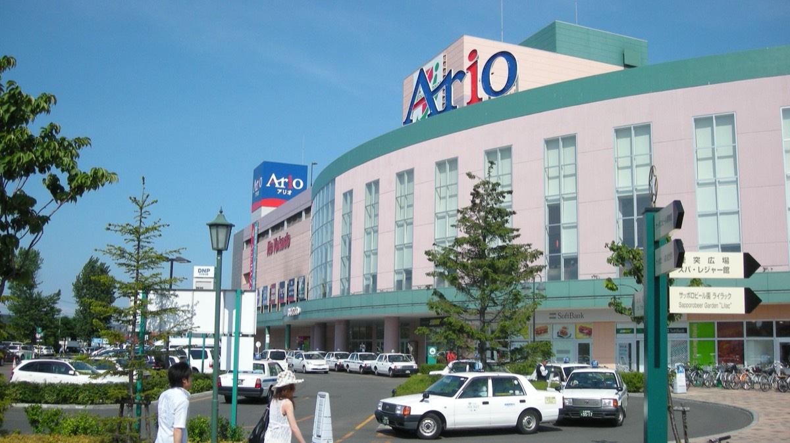
DAY 4 · 11.26 THU
키오스크 먼저, 로열 라운지
10:45 출발, 여유는 약 1시간. 공항에선 면세 키오스크가 위탁보다 먼저다.
- 06:00~
07:20 아침 온천 - 07:30~
08:30 숙소 조식전날까지 예약 - 08:30~
09:45 마지막 온천(마지막 입장 9:45) 또는 짐 마무리면세품(아기용품)은 꺼내기 쉬운 가방 맨 위, 술은 위탁 가방·박스 - 10:15JR 北海道(홋카이도) 운행정보 확인지연이면 택시(「틀어지면」)
- 10:45택시 → JR札幌駅(JR 삿포로역)10:40 체크아웃(기한 11:00). 택시는 전날 밤 프런트에(카드 70쪽) · 약 5분, 1,000엔 안팎(추정) · 트렁크 크기 확인
- 11:00 전후快速エアポート(쾌속 에어포트) uシート(유 시트)37분 · 1,230엔 + 800엔(えきねっと(에키넷토))/1,000엔 · 낮엔 약 10분 간격
- 11:40~
11:55 新千歳空港駅(신치토세 공항역) → 2층 연결시설 → 국제선약 15분(추정). 3층 통로는 2027-06말까지 공사로 폐쇄. 카트 사용 - 11:55~
13:45 키오스크 → 체크인·위탁 → 출국 → 라운지시각과 순서는 아래 ①~⑤ - 14:15KE766 → 인천 17:30e-티켓으로 시각 확인(14:00 표기도 있다) · 최근 20~40분 지연
- 17:30~인천 입국 → 수하물 → 세관 자진신고신고 통로로. 「술과 세금」(61쪽)
공항에 내리면 이 순서
- 11:55~12:10 국제선 3F 면세 키오스크
여권을 댄다. 초록이면 끝, 빨강이면 세관 확인. 맡긴 뒤엔 못 한다.
- 12:10~12:40 대한항공 체크인·위탁
술 박스 포함. 카운터 오픈 확인 필요, 마감은 13:15로 잡는다(추정).
- 12:40~13:00 보안검색·출국심사
라운지 카드는 체크인 카운터에서(온라인 체크인이면 탑승권).
- 13:00~13:45 4F ロイヤルラウンジ(로열 라운지)
69번 탑승구 맞은편. 「프레스티지」(59쪽).
- 13:45 탑승
최근 66·67번 탑승구.
PRACTICAL · PRESTIGE
라운지 둘, 좌석, 기내
가는 날은 인천 라운지 서편에서 75분, 오는 날은 新千歳(신치토세) 로열 라운지에서 45분. 비행은 가는 편 2시간 45분, 오는 편 3시간 15분(시각표 기준).
인천 T2, 출발 아침 (11/23)
| 시각 | 단계 | 메모 |
|---|---|---|
| 07:20 | 인천 T2 도착 | 출발 2시간 45분 전(추정) |
| 07:30 | 3층 프리미엄 체크인 존 | 프레스티지·우수회원 전용 카운터 |
| 07:45 | 보안검색·출국심사 | 프레스티지 우선 보안검색 확인 필요 |
| 08:00~09:15 | 프레스티지 라운지 서편 | 248번 탑승구 맞은편 4F, 04:00~23:30 |
| 09:20 | 탑승구로 | 탑승구 확인 필요 |
| 09:35 전후 | 탑승 | 출발 30분 전(추정). 10:05 출발 |
- 입장 시각별(추정): 08:00이면 약 75분(바텐더 칵테일 1~2잔, 라이브 스테이션 한 접시, 커피), 08:30이면 약 45분, 09:00이면 15~20분(권하지 않는다). 이날은 식사가 이어지니 칵테일 위주로(추정).
- 서편: 2026-04-16 정식 오픈, 420여 석. 뷔페, 그랜드 하얏트 인천 셰프의 라이브 스테이션(분기별 메뉴), 바텐더 칵테일, 샤워·수면실. 와인 리스트 확인 필요.
- 탑승구가 멀면(모두 4F): 서편가든 218번 04:00~22:00, 동편우측·동편좌측 253번 06:00~22:00, 동편가든 281번 06:00~22:00.
좌석
- B777-300(338석, 프레스티지 41석) 계획(보도 기준). 출발 2~3일 전 좌석 배치도로 확인.
- 프레스티지 슬리퍼: 180° 침대형, 2-3-2, 1~11열. 간격 188cm, 너비 51cm, 침대 185cm, 15.4인치 모니터, USB-A.
- 둘이면 A-B 또는 H-J(추정). 9열 뒤 화장실·갤리, 7열·10열 앞 요람 장착 위치라 그 앞뒤는 소음 가능(추정).
기내
- 비행 2시간 45분(오는 편 3시간 15분), 트레이 1회(브런치 또는 점심). 2024-08 KE765 후기는 기내식·와인을 혹평했다(1/10점).
- 네트워크 전체로는 2026년 수상(Wines on the Wing 비즈니스 와인 리스트 1위 등). 단거리 일본 노선 샴페인 확인 필요.
- 오는 편은 착륙 전에 모바일 자진신고를 써 두면 인천에서 시간이 준다(제출 시점 확인 필요, 「술과 세금」(61쪽)). 위탁 수하물은 1인 2개·각 32kg, 합산 불가(「술 쇼핑」(40쪽)).
ロイヤルラウンジ 로열 라운지
- 위치
- 新千歳(신치토세) 국제선, 출국심사 뒤 69번 탑승구 맞은편 4F
- 시간
- 07:30~21:00(공항) / 09:00~21:00(대한항공). 13:00 이용이라 영향 없음
- 시설
- 231석. 주류·경식, 샤워·수면실·흡연실. 라운지 카드는 체크인 카운터에서(온라인·키오스크 체크인이면 탑승권)
후기(2025-07): 미소라멘·수프카레, 홋카이도 와인(十勝(도카치), ケルナー(케르너) 등). 4F そらくうはん(소라쿠한)은 술 시음, 기내 반입 가능(추정), 한국 주류 한도에 든다.
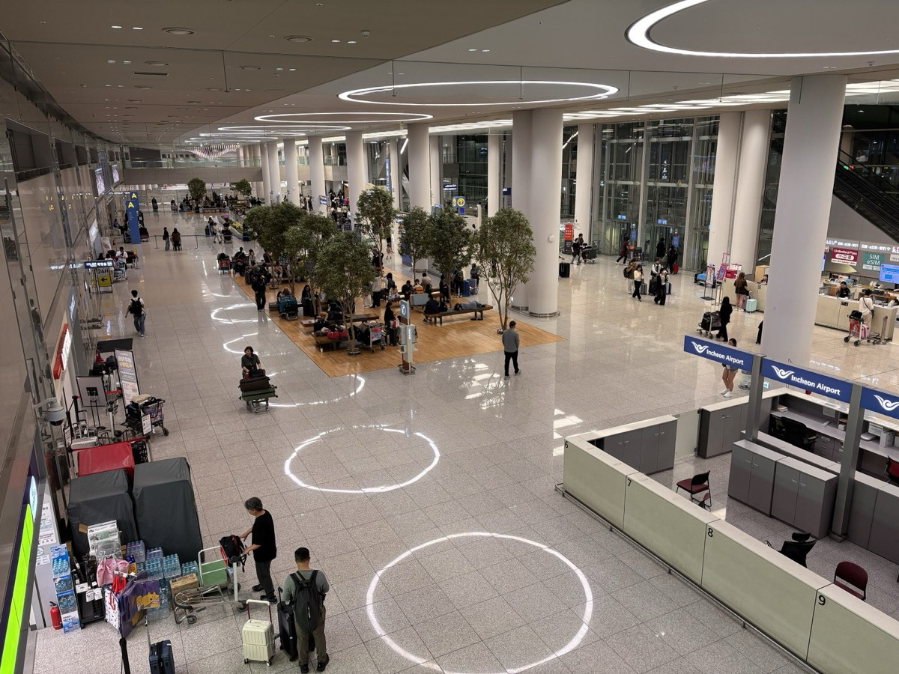
PRACTICAL · TAX
한도를 넘겨 사고, 신고한다
부부 면세는 4L·US$800. 넘긴 병값의 약 64%가 세금(자진신고, 추정). 인천에서는 신고 통로로 간다.
한국 면세 한도
- 주류는 1인 2L 이하이면서 US$400 이하. 일반 물품 US$800 면세와 따로 센다(관세청). 만 19세 미만은 주류 면세 없음.
- 부부는 각자 한도, 합계 4L·US$800(2025년 보도 기준). 병 수 제한은 2025-03-21 폐지(보도). 그래도 용량 때문에 1인 2병까지: 750ml 2병(1.5L), 750ml + 720ml(1.47L).
- 과세는 병 단위라는 보도·사례가 있다(700ml 3병 중 1병 과세). 어느 병을 면세로 두는지는 세관 판단 확인 필요.
세금은 병값의 약 64%
| 세목 | 와인 | 사케(청주로 봄) | 계산 기준 |
|---|---|---|---|
| 관세 | 15% | 15% 확인 필요 | 구매가 |
| 주세 | 30% | 30%(추정) | 구매가 + 관세 |
| 교육세 | 주세의 10% | 주세의 10%(추정) | 주세 |
| 부가세 | 10% | 10% | 구매가 + 앞의 세금 셋 |
| 합계 | 약 68.2% | 약 68.2%(추정) | 15 + 34.5 + 3.45 + 15.3 |
| 자진신고 | 약 63.7% | 약 63.7%(추정) | 관세의 30% 경감 = 4.5%p |
| 적발 시 | 약 95.5% | 약 95.5%(추정) | 68.2% × 1.4, 경감 없음 |
- 와인 주세 30%·교육세 주세의 10% 는 주세법 제8조·교육세법 제5조 원문(2026-11-08). 합산은 계산이고 2025년 보도의 와인 68%와 맞는다. 사케는 청주로 보고 같게 셈했다(추정, RCEP 적용 확인 필요).
- 관세 경감분을 주세·부가세 과세표준에서도 빼면 자진신고는 약 61.7%(시나리오 B 기준 1~2만원 차이). 원문을 확인하지 못해 높은 쪽으로 적었다.
- 환산 가정 1엔 = 9.3원, 1달러 = 150엔(US$400 ≈ 6만 엔).
얼마나 사면 얼마
| 시나리오 | 총 구매가 | 과세 대상 | 자진신고 세액 | 적발 시 |
|---|---|---|---|---|
| A 와인 6 + 사케 4 | 54,000엔(약 50만원) | 26,000~42,000엔 | 약 15~25만원 | 약 23~37만원 |
| B 와인 10 + 사케 4 | 100,000엔(약 93만원) | 44,000~86,000엔 | 약 26~51만원 | 약 39~76만원 |
| C 와인 12 + 사케 6 | 118,000엔(약 110만원) | 86,000~106,000엔 | 약 51~63만원 | 약 76~94만원 |
- 가정 단가: A 와인 7,000엔, 사케 720ml 3,000엔. B 컬트 2만·부르고뉴 1.2만×3·홋카이도 5,000엔×6, 一升瓶(일승병) 5,000엔, 720ml×3. C 와인 8,000엔×12, 一升瓶(일승병)×2, 720ml×4. 술 무게 A 12.6 · B 19.6 · C 26.4kg.
- 읽는 법: 세금은 대략 면세 4병을 뺀 나머지 병값의 64%. 낮은 쪽은 비싼 4병이, 높은 쪽은 싼 4병이 면세로 빠진 경우. B를 신고하지 않고 걸리면 약 13~25만원을 더 낸다. 사는 순서는 「술 쇼핑」(40쪽).
인천에서 신고하는 순서
- 영수증은 가게별·사람별로
과세가격 증빙. 마실 병은 따로 계산(「계산 나누기」 카드(74쪽)).
- 기내나 도착 직후 신고서
모바일 또는 종이. 병 수·용량·금액. 앱 이름·제출 시점 확인 필요.
- 수하물을 찾아 신고 통로로
「신고없음」 통로가 아니다. 영수증을 내고, 병을 보여 달라면 연다.
- 납부
모바일로 신고했으면 모바일 고지서로. 현장 카드 납부 확인 필요. 30~60분 더 잡는다(추정).
일본 면세 환급 (2026-11-01부터)
- 세금 포함 가격으로 결제, 출국 때 세관 확인 뒤 소비세 상당액 환급(관광청). 같은 가게·같은 날 세전 5,000엔 이상, 90일 안에 출국.
- 영수증 단위: 한 장의 물건 중 하나라도 없으면(마셨으면) 그 영수증 전체가 환급 불가.
- 위탁 전에 키오스크: 新千歳(신치토세) 국제선 3F, 6:00~폐관. Cash Japan Tax Refund 3F 7:00~20:00(특정 사업자분만). 주세는 돌려받지 않는다(추정).
- 원칙(추정): 술은 면세로 사지 않는다(いとう(이토)는 면세 불가 리뷰). 면세로 산 병은 캐리어 맨 위. 키오스크에는 アカチャンホンポ(아카찬혼포) 아기용품 중심(한국에선 1인 US$800 일반 면세). 「Day 3」(53쪽)·「Day 4」(56쪽).
PRACTICAL · TRANSPORT
지하철, JR, 택시, 바둑판 주소
시내는 지하철과 걷기, 병이 늘면 택시. 16시면 어둡고 밤에는 언 보도를 조심한다.
요금
| 무엇 | 요금 · 메모 |
|---|---|
| JR 快速エアポート(쾌속 에어포트) | 1,230엔. 공항 ↔ 삿포로 37분, 낮 약 10분 간격 |
| uシート(유 시트) | +800엔(えきねっと(에키넷토) 티켓리스) / +1,000엔(종이) |
| 지하철 | 1구 210엔(3km까지) · 2구 250엔 · 3구 290엔 |
| 市電(시전) | 1회 230엔, 환승 할인(1구 + 시전 360엔) |
| 카드 터치(지하철) | 하루 상한 평일 830엔 · 토일공휴일 520엔(같은 카드·같은 기기). IC 카드는 Suica 등 전국 교통계 |
| 공항 정액 택시 | 약 11,000~13,100엔/대 + 고속도로 약 1,300엔, 약 1시간(추정) |
| 시내 택시 | 기본요금 확인 필요. 22:00~05:00 20% 할증 |
이번 일정에 쓰는 편
| 날짜 | 구간 | 수단 | 소요 | 요금 |
|---|---|---|---|---|
| 11/23 | 공항 → 札幌(삿포로) → 숙소 | 쾌속 에어포트 + 유 시트, 택시 | 37분 + 5분 | 1,230 + 800엔, 택시 1,000엔 안팎(추정) |
| 11/24 | さっぽろ(삿포로) → 澄川(스미카와) → 中島公園(나카지마코엔) | 南北線(난보쿠선) | 약 16분 · 약 10분 | 250엔씩(추정) |
| 11/24 | 주류점 셋 → 숙소 | 택시 3번 | 10 · 5 · 7분 | 첫 구간 1,000~1,500엔(추정) |
| 11/25 | 大通(오도리) → 北24条(기타니주욘조) | 南北線(난보쿠선) | 약 7분 | 210엔(추정) |
| 11/25 | 鍾馗(쇼키) → アリオ札幌(아리오 삿포로) | 택시 / 지하철 + JR | 15분 / 약 30분 | 1,500~2,000엔(추정) |
| 11/26 | 숙소 → JR札幌駅(JR 삿포로역) → 공항 | 택시 + 쾌속 에어포트 | 5분 + 37분 | 1,000엔 안팎 + 1,230 + 800엔 |
- 택시 목적지는 카드(72쪽). 공항 정액 택시는 전날~2시간 전 사전 예약(MK 숙소 구역 13,100엔 + 고속도로). 눈 예보면 11/25 밤에 프런트로. 눈 오는 날은 지하(추정): 大通(오도리) ~ さっぽろ駅(삿포로역) チ・カ・ホ(치카호), ~ すすきの(스스키노) ポールタウン(폴타운).
날씨 (삿포로 평년값)
11/23 → 11/26: 최고 6.6℃ → 5.8℃, 최저 0.0℃ → -0.6℃, 강설 1~2cm, 최심적설 3~4cm, 일출 6:36 → 6:40, 일몰 16:05 → 16:03.
| 날짜 | 최고 / 최저 | 강설 / 최심적설 | 일출 / 일몰 |
|---|---|---|---|
| 11/23 월 | 6.6℃ / 0.0℃ | 1cm / 3cm | 6:36 / 16:05 |
| 11/24 화 | 6.3℃ / -0.2℃ | 2cm / 3cm | 6:38 / 16:04 |
| 11/25 수 | 6.1℃ / -0.4℃ | 2cm / 4cm | 6:39 / 16:04 |
| 11/26 목 | 5.8℃ / -0.6℃ | 2cm / 4cm | 6:40 / 16:03 |
- 첫눈 평년 10/28, 根雪(네유키, 쌓여 녹지 않는 눈) 평년 12/4경. 16시면 어둡다. 신발은 미끄럼 방지·방수(밤에 언 보도, 추정). 행사는 「Day 1」(45쪽).
주소 읽는 법
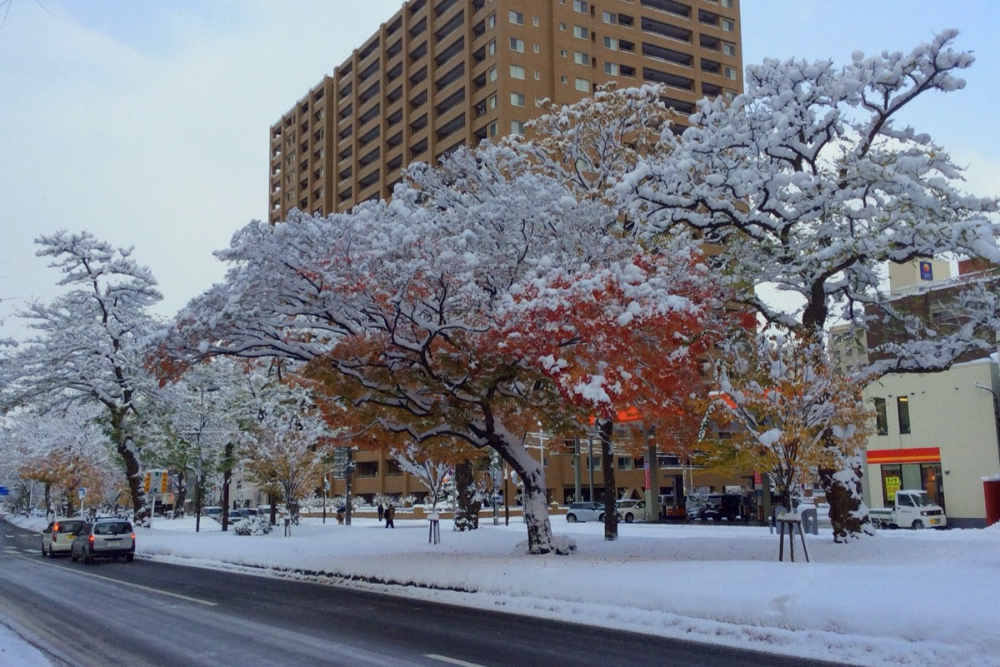
CHECKLIST
출발 전, 현지, 연락처
예약 현황 전체는 「나흘 한눈에」(8쪽).
출발 전 · 짐 · 현지
- e-티켓: KE766 14:15/14:00, 좌석 A-B 또는 H-J.
- すしどんぶり(스시돈부리) 11/23 19:00 2명, Tabelog 넷 예약(11/20까지).
- 맥주 박물관 가이드투어 11/25 2명, 온라인(시작 2시간 전까지).
- ばんなちゅ(반나추) 11/24 20:45 DM(11/21 전후). nano.femto. 11/25 19:45 는 전화만이라 11/23 프런트 대행.
- nano gould. 11/23 21:20, 예약 페이지(「바 가이드」 QR, 브라우저로 연다). 무연락·당일 취소 100%.
- 짐: 방수·미끄럼 방지 신발, 방한, 지퍼백, 여권, 영수증 봉투, 와인 쉬퍼 박스 1~2개(6병용)·프로텍터 6~10개. 모바일 자진신고 방법(관세청 안내).
- 11/22: Visit Japan Web QR. 현금 1인 3만 엔 안팎(추정) + 11/24 いとう(이토)의 일본 와인 값(매장 결제 현금만).
- 11/23 체크인: 전화 대행(魚菜(교사이)·nano.femto.·桜本(사쿠라모토) 영업), 조식 11/25·26, 냉장고, 박스(카드(70쪽)).
- 11/25: 맥주 투어 회차·鷄灯(게이토) 콜키지(문의 080-3237-1443). 밤엔 다음 날 10:40 택시(큰 차), 눈 예보면 공항 정액 택시(카드(70쪽)).
연락처
- 숙소
- 由縁 札幌(유엔 삿포로) 011-271-1126 · 夏下冬上(가카토조) 011-271-1143
- 긴급
- 경찰 110 · 구급·소방 119 · 영사안전콜센터 +82-2-3210-0404(24시간)
- 총영사관
- 011-218-0288, 北2条西12丁目1-4(기타 2조 니시 12초메 1-4) · 평일 08:45~17:30
CREDITS
사진과 참고 자료
인쇄판 사진의 작가와 라이선스는 사진마다 캡션 끝에 적었다. 원본 파일 주소와 사진 전체 목록은 웹판의 이 쪽에 있다. 사진은 모두 위키미디어 공용(Wikimedia Commons)에 자유 라이선스(CC0, CC BY, CC BY-SA)로 공개된 것을 크기를 줄이고 판형에 맞게 가장자리를 잘라 실었다(색 보정 없음, 원본은 각 파일 페이지). 촬영 시기와 계절은 이번 여행과 다를 수 있다. 음식 사진은 요리의 한 예이고, 이 책에 나오는 가게에서 찍은 것으로 확인된 사진은 없다.
사진은 모두 위키미디어 공용(Wikimedia Commons)에 자유 라이선스(CC0, CC BY, CC BY-SA)로 공개된 것을 크기를 줄이고 판형에 맞게 가장자리를 잘라 실었다(색 보정 없음, 원본은 각 파일 페이지). 괄호 안은 촬영 연도로, 계절이 이번 여행과 다를 수 있다. 음식 사진은 요리의 한 예이고, 이 책에 나오는 가게에서 찍은 것으로 확인된 사진은 없다. 이름을 누르면 원본 파일 페이지가 열린다.
.jpg){kind=link}
.jpg){kind=link}


.jpg){kind=link}


.jpg){kind=link}


.jpg){kind=link}
.jpg){kind=link}
.jpg){kind=link}

.jpg){kind=link}


.jpg){kind=link}
.jpg){kind=link}

.jpg){kind=link}
라이선스 원문 CC BY 2.0 creativecommons.org/licenses/by/2.0/ CC BY 2.5 creativecommons.org/licenses/by/2.5/ CC BY 3.0 creativecommons.org/licenses/by/3.0/ CC BY 4.0 creativecommons.org/licenses/by/4.0/ CC BY-SA 2.0 creativecommons.org/licenses/by-sa/2.0/ CC BY-SA 3.0 creativecommons.org/licenses/by-sa/3.0/ CC BY-SA 4.0 creativecommons.org/licenses/by-sa/4.0/ CC0 1.0 creativecommons.org/publicdomain/zero/1.0/
지도와 도해는 이 책을 위해 새로 그린 개념도로, 실제 축척과 다르다. 지도 바탕 © OpenStreetMap contributors (ODbL) · 지도·도해 제작 지도·인포그래픽 작가.
참고 자료(조사 기준일 2026년 11월 8일): 대한항공, 한국 관세청·법제처, 観光庁(관광청), 国税庁(국세청), JR 北海道(JR 홋카이도), 新千歳空港(신치토세 공항), 札幌観光協会(삿포로 관광협회), 気象庁(기상청)·国立天文台(국립천문대), visit-hokkaido, 가게·양조장·와이너리의 공식 사이트와 공식 X, Tabelog, 北海道新聞(홋카이도 신문), Discover Japan, nippon.com, サライ(사라이), Pellicle. 문장마다의 출처는 원고별 조사 기록에 남겼다.
SHOW CARDS
보여 주고, 읽어 주는 일본어
큰 글씨는 보여 주고, 전화는 발음을 줄 번호대로 읽는다. 전화는 숙소 프런트 대행이 먼저다.
전화
11/24 16:00, 魚菜(교사이) · 011-210-8588(한국 휴대폰 +81-11-210-8588)
本日、2名で予約をお願いしたいのですが、何時ごろ空いていますか。
혼지쓰, 니메-데 요야쿠오 오네가이 시타이노데스가, 난지고로 아이테 이마스카.
오늘 2명 예약하고 싶은데, 몇 시쯤 자리가 있나요?
18時、無理なら19時までに入れる時間はありますか。
주-하치지, 무리나라 주-쿠지마데니 하이레루 지칸와 아리마스카.
18시, 안 되면 19시 전에 들어갈 수 있는 시간이 있나요?
名前はです。電話番号は＋82です。
나마에와 ＿＿데스. 덴와반고-와 푸라스 하치니 ＿＿데스.
이름은 ＿입니다. 전화번호는 +82 ＿입니다.
숙소 프런트
11/23 체크인, 전화 대행 · 魚菜(교사이) 011-210-8588 · 桜本(사쿠라모토) 011-521-2078 · nano.femto. 011-231-2688
明日16時に、こちらのお店（魚菜）に2名の当日予約の電話をお願いできますか。18時、無理なら19時までの時間で。
아시타 주-로쿠지니, 고치라노 오미세(교사이)니 니메-노 도-지쓰 요야쿠노 덴와오 오네가이 데키마스카. 주-하치지, 무리나라 주-쿠지마데노 지칸데.
내일 16시에 이 가게(교사이)에 2명 당일 예약 전화를 부탁드려도 될까요? 18시, 안 되면 19시 전으로요.
結果は明日16時20分ごろ、フロントで伺います。
겟카와 아시타 주-로쿠지 니줏푼고로, 후론토데 우카가이마스.
결과는 내일 16시 20분쯤 프런트에서 듣겠습니다.
明日、丸市桜本商店（011-521-2078）が営業しているか、何時から何時までか、確かめていただけますか。
아시타, 마루이치 사쿠라모토 쇼-텐가 에-교- 시테 이루카, 난지카라 난지마데카, 다시카메테 이타다케마스카.
내일 마루이치 사쿠라모토 상점이 영업하는지, 몇 시부터 몇 시까지인지 확인해 주실 수 있나요?
11月25日19時45分、the bar nano.femto.に2名の予約の電話もお願いできますか。
주-이치가쓰 니주-고니치 주-쿠지 욘주-고훈, 자 바- 나노 펨토니 니메-노 요야쿠노 덴와모 오네가이 데키마스카.
11월 25일 19시 45분, the bar nano.femto.에 2명 예약 전화도 부탁드려도 될까요?
11/23 체크인 때 프런트, 조식·냉장고·포장 상자
朝食を予約したいです。11月25日と26日、2名です。
조-쇼쿠오 요야쿠 시타이데스. 주-이치가쓰 니주-고니치토 니주-로쿠니치, 니메-데스.
조식을 예약하고 싶습니다. 11월 25일과 26일, 2명입니다.
部屋に冷蔵庫はありますか。段ボール箱とガムテープをいただけますか。
헤야니 레-조-코와 아리마스카. 단보-루바코토 가무테-푸오 이타다케마스카.
방에 냉장고가 있나요? 골판지 상자와 테이프를 얻을 수 있을까요?
11/25 밤, 다음 날 택시(눈 예보면 둘째 문장도)
明日の朝10時40分に、タクシーを1台お願いできますか。荷物が多いので、大きめの車（ワゴン）でお願いします。
아시타노 아사 주-지 욘줏푼니, 다쿠시-오 이치다이 오네가이 데키마스카. 니모쓰가 오-이노데, 오-키메노 구루마(와곤)데 오네가이시마스.
내일 아침 10시 40분에 택시 한 대 불러 주실 수 있나요? 짐이 많으니 큰 차(왜건)로 부탁합니다.
雪の予報なので、新千歳空港まで定額タクシーを予約できますか。
유키노 요호-나노데, 신치토세 구-코-마데 데-가쿠 다쿠시-오 요야쿠 데키마스카.
눈 예보라서요, 신치토세 공항까지 정액 택시를 예약할 수 있나요?
식당·바
예약한 가게 입구
予約しているです。時、2人です。
요야쿠 시테이루 ＿＿데스. ＿＿지, 후타리데스.
예약한 ＿(이름)입니다. ＿시, 2명입니다.
木多郎(기타로), 물이 올 때 주문
を、辛さは番でお願いします。
＿＿오, 가라사와 ＿＿반데 오네가이시마스.
＿을, 매운맛 ＿번으로 부탁합니다. 예: かきやさい(가키야사이) · チキンやさい(치킨야사이), 0번 제로반 · 1번 이치반 · 2번 니반.
니혼슈 바·이자카야(魚菜(교사이)의 비교 세트는 둘째 문장)
北海道のお酒はありますか。飲み比べたいです。
홋카이도-노 오사케와 아리마스카. 노미쿠라베타이데스.
홋카이도 술 있나요? 비교해서 마셔 보고 싶어요.
利酒セットをお願いします。
기키자케 셋토오 오네가이시마스.
기키자케(비교 시음) 세트 주세요.
와인바, 잔으로
北海道のワインをグラスでお願いします。
홋카이도-노 와인오 구라스데 오네가이시마스.
홋카이도 와인을 잔으로 부탁합니다.
鷄灯(게이토), 와인 지참. 콜키지 금액 확인 필요(문의 080-3237-1443)
ワインを1本持ち込みたいのですが、よろしいですか。持ち込み料はおいくらですか。
와인오 입폰 모치코미타이노데스가, 요로시-데스카. 모치코미료-와 오이쿠라데스카.
와인 한 병을 가져가고 싶은데 괜찮을까요? 지참료(콜키지)는 얼마인가요?
택시
택시 기사에게, 목적지를 짚으며
ここまでお願いします。
고코마데 오네가이시마스.
여기까지 가 주세요.
トランクに荷物を入れてもらえますか。ワインが入っているので、気をつけてください。
도란쿠니 니모쓰오 이레테 모라에마스카. 와인가 하잇테 이루노데, 기오 쓰케테 구다사이.
트렁크에 짐을 실어 주실 수 있나요? 와인이 들어 있으니 조심해 주세요.
- 숙소 유엔 삿포로
- 由縁 札幌
札幌市中央区北1条西7丁目6
011-271-1126 - JR 삿포로역
- JR札幌駅
- 기타로 스미카와 본점
- 木多郎 澄川本店
札幌市南区澄川六条4-2-1 澄川ビル 1F - 지토세쓰루 사케 뮤지엄
- 千歳鶴 酒ミュージアム
札幌市中央区南3条東5丁目 - 와인숍 후지이
- ワインショップフジヰ
札幌市中央区南3条西3丁目1-2 - 아리오 삿포로
- アリオ札幌
札幌市東区北7条東9-2-20 - 게이토
- 鷄灯
札幌市中央区南一条東2-13 越中ビル 1F - 신치토세 공항 국제선 터미널
- 新千歳空港 国際線ターミナル
주류점·계산대
와인숍·바, 컬트 와인
北海道のワインで、タカヒコ・ナカザワ・KONDO・ドメーヌ モン・登醸造はありますか。
홋카이도-노 와인데, 다카히코, 나카자와, 곤도, 도메-누 몬, 노보리 조-조-와 아리마스카.
홋카이도 와인 중 다카히코·나카자와·곤도·도멘 몬·노보리 양조 있나요?
주류점, 생주 가리기
これは火入れしていますか。冷蔵が必要ですか。
고레와 히이레 시테 이마스카. 레-조-가 히쓰요-데스카.
이 술은 화입(열처리)했나요? 냉장이 필요한가요?
주류점, 포장과 와인 박스
海外に持って帰ります。割れないように包んでください。
가이가이니 못테 가에리마스. 와레나이요-니 쓰쓴데 구다사이.
해외로 가져갑니다. 깨지지 않게 싸 주세요.
ワイン用の発泡スチロールの箱はありますか。
와인요-노 핫포-스치로-루노 하코와 아리마스카.
와인용 스티로폼 상자 있나요?
계산대, 면세(여권과 함께)와 영수증 나누기
免税できますか。
／免税でお願いします。
멘제- 데키마스카. / 멘제-데 오네가이시마스.
면세 되나요? / 면세로 부탁합니다.
持って帰る分と、日本で飲む分で、会計を分けてください。
못테 가에루 분토, 니혼데 노무 분데, 가이케-오 와케테 구다사이.
가져갈 것과 일본에서 마실 것을 나눠 계산해 주세요.
PHRASES
술자리에서 짧게
입구, 주문, 계산의 짧은 말. 안 통하면 일본어를 보여 준다. 전화·예약·포장은 「보여 주는 카드」(68쪽), 사케 등급 말은 「라벨 읽기」(21쪽).
- 2명이에요, 카운터석도 괜찮아요
- 2人です。カウンターでも大丈夫です。후타리데스. 가운타-데모 다이조-부데스.
- (니혼슈) 차가운 걸로 / 따뜻한 걸로
- 冷たいのをお願いします。／温かいのをお願いします。쓰메타이노오 오네가이시마스. / 아타타카이노오 오네가이시마스.
- 한 잔 더 주세요
- もう一杯ください모- 입파이 구다사이
- 물 주세요
- お水をください오미즈오 구다사이
- (줄 서는 가게) 줄 맨 끝이 여기인가요?
- 最後尾はここですか。사이코-비와 고코데스카.
- 계산 부탁합니다. 카드 되나요?
- お会計をお願いします。カードは使えますか。오카이케-오 오네가이시마스. 가-도와 쓰카에마스카.
- 술 말: 데우지 않은 술 / 데운 술 · 한 홉(약 180ml) · 잔 / 병 · 비교 시음
- 冷や／燗 一合 グラス／ボトル 飲み比べ히야 / 간 · 이치고 · 구라스 / 보토루 · 노미쿠라베
- 감사합니다 / 잘 먹었습니다
- ありがとうございます／ごちそうさまでした아리가토- 고자이마스 / 고치소-사마데시타
SAPPORO
북쪽의 잔
나흘 한눈에 · 특집 홋카이도의 술 · 가게 · Day 1~4 · 실용 · 보여 주는 일본어
카드보여 주는 카드 68쪽 카드짧은 말 75쪽
비매품 · 개인 여행용
2026-11-18 인쇄용 초판